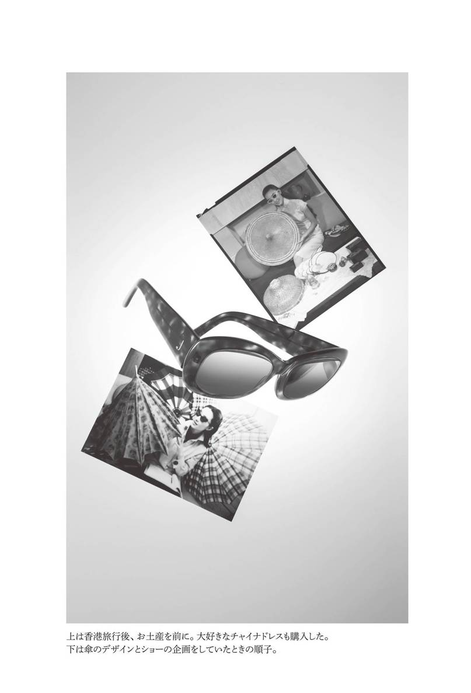
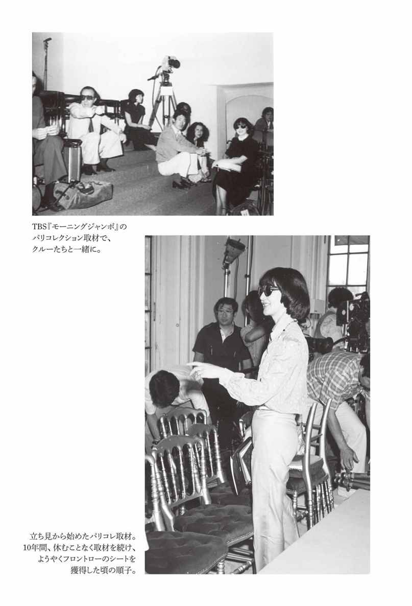

| お洒落の旅人 大内順子 | |
| 大内 順子 | |
| (2014) | |
この本は縦書きでレイアウトされています。また、ご覧になる機種により、表示の差が認められることがあります。
大内順子さんは二〇一四年十月三十日にご逝去されました。
心よりご冥福をお祈り申し上げます。
この本は亡くなる直前までのインタビューをもとに構成されています。
まえがき
ファッションの取材を中心に一年のスケジュールが決まる------そんな日々を長いこと送ってきました。スーツケース一つに荷物を詰めて、ファッション・ジャーナリストとしての使命を感じれば、どこへでも旅立ちました。
初春といっても石畳の路面が凍りつくような寒さが残るパリ。そのシーズンの流行を決めるコレクションのクライマックスです。美しい服をまとってランウェイを歩くトップモデル、拍手喝采のフィナーレに現れたデザイナーはランウェイの上から私に目配せ。この後、すぐ彼を楽屋まで追いかけてインタビューを取ることになっているのです。たった今、最高のパフォーマンスを終えたばかりのデザイナーの燃えたぎるような情熱。この情熱を、そしてこの瞬間を多くのかたに伝えたいから、私は年に四回もパリを訪れ続けたのです。
セントラルパークの緑が眩しい初夏のニューヨークで行われたグッチの発表会。世界各国からジャーナリストが集まった盛大なパーティに招待を受けました。トム・フォードを囲んだメインテーブルには著名なジャーナリストたちに加わって、私、そして隣には娘の彩。ニューヨークの摩天楼に煌めく記憶は今でも黄金色に輝いています。
紅葉の美しいロンドンの秋。ホテルに一通の招待状が届きました。送り主は「ダウニングストリート一〇番地 マーガレット・サッチャー」。鉄の女と称された首相からのお招きにとても緊張し官邸を訪れると、首相は私に会うなり、にこやかにこう話しかけます。「ミセス・オオウチ、なんて素敵なブローチをしていらっしゃるの？ どこでお買い求めになったのかしら？」。トップレディの心のゆとり、そしてファッションへの探究心。鉄の女が見せた優しさは忘れられません。
真冬のロシアで行われたエルメスのパーティ。会場だといわれバスを降ろされたそこには、雪が積もる平原があるだけ。謎解きをしながら、用意されたソリに乗っていけば、向こうに小さな小屋が見えてきます。パチパチと燃える大きなたき火、それを囲むようにセットされたテーブルには、山盛りのキャビア。そして雪の中で見るコサックダンス。とてもとても寒いはずなのに、不思議と寒く感じない。ブランドの遊び心に陶酔した鮮烈な思い出です。
大学時代に熱心に活動してきたファッションモデルを潔く辞め、この道を歩み始めて今年で五八年が過ぎました。振り返れば、美しいもの、きれいなものに囲まれた幸せな人生の瞬間ばかりが甦ります。ファッション・ジャーナリストとして多くのメディアで仕事をしてきたことで、この道の第一人者として認められるようになったことは、大きな喜びでもあります。しかし一方で、若かりし頃、突然襲った悲しい事故の記憶を私は決して忘れることはありません。
一九六〇年の交通事故によって、私は一命を取り留めたのと引き換えに、片方の目の視力を完全に失いました。二か月にも及ぶ入院中、眼帯に覆われた暗黒の世界の中で今後の人生を思い、絶望の淵に立たされたのです。見えないはずの目からも失ったものへの涙がとめどもなく流れました。けれども、私は悲しみの呪縛を解き、前を見て一歩一歩踏み出すことにしたのです。「できないこと」ではなく「できること」を考えよう、ゆっくりでも構わないから確実に進んで行こうと。その歩みは、喜びに、そして幸せに、と一つずつ繋がりました。そして私は「世界のファッションを日本に紹介したい」という強い情熱をもつようになったのです。その一途な思いを抱いて、いつも未来を信じて生きてきたから、現在がある------若いときには想像すらできなかった限りなく広い世界が私の目の前に広がったのです。
お洒落の旅人
目 次
お洒落の旅人 大内順子［目次］
造本装幀 岡 孝治
写真 中村 淳
カバー表１／宮内 裕氏が晩年に描いた大内順子さんの肖像画
冒頭ページ／宮内 裕氏が描いた20代前半の大内順子さんの肖像画
上海自然科学研究所の記憶
一九三四（昭和九）年五月四日、街路樹のプラタナスが青々と茂り、その葉の間からこぼれる日差しに強さを感じるようになってきた春満開の上海フランス租界の病院で、私は大内家の次女として生まれました。
農学博士であった父、大内義郎はフランス租界の最西端にあった「上海自然科学研究所」で生物学科の昆虫学研究員として勤務しており、その駐在に一家が帯同して間もなくの出来事でした。
上海自然科学研究所とは、一九〇〇（明治三十三）年に起きた義和団事件の賠償金の平和的な使い道として、一九三一（昭和六）年に設立された純粋な研究機関です。悪化の一途を辿る日中関係を良好な方向へ導くための文化事業として位置づけられており、日中の学者が共同で医学、生物学、地学など科学に関する幅広い研究を行っていました。一九二〇年代に幾度となく開かれた賠償金の使い道を話し合う会議のメンバーに父の父、つまり私の祖父である大内暢三が参加していたからでしょう。私の父は研究所の創設準備委員から携わり、研究員として母と幼い姉、栄子を連れてこの地に渡ってきたのです。
研究所は船成金といわれたイギリス人の邸宅などを購入して建てられ、二万坪もある広大な敷地を有していました。重厚な正門と裏門には、私たちが親しみを込めて「印度さん」と呼んでいた、立派な髭を蓄えたターバン姿の大柄なインド人守衛が数人ずつ悠然と立ち、その門からは威風堂々とした研究所の本館を眺めることができたのです。その本館は東京大学の安田講堂を手がけた著名な建築家、内田祥三が設計した鉄筋コンクリート三階建ての重厚で威厳に満ちた左右対称のゴチック様式。今でも安田講堂をはじめ、東大の建築物を見ると懐かしさを感じるのは、このときの記憶が甦るからです。ここには大都市、上海の中心地にあるとは思えないほどの自然が手つかずのまま残っており、中には美しい庭園、研究用の植物園、三面のテニスコートや子ども用の砂場やすべり台までがあり、瀟洒な建物が居並ぶフランス租界の中でも特別な場所でした。
私が二歳のとき、研究所内に日本人職員用の住居が三棟完成したので、私たちは一家揃って移り住み、研究所の敷地内で暮らすことになりました。その住居は今でいう高級マンション並みの間取り。二つのベッドルーム、リビング、応接室、アマと呼ばれる住み込みで働く女性用の小さな部屋にバルコニーとサンルームといくつも部屋があり、最新のセントラルヒーティングが完備。現代の建築と比べても見劣りしないほどの、モダンで贅沢なアパートでした。
あれはつい一〇年ほど前のことですが、私は自分の暮らしていた家というものをひと目見たいという衝動にかられ、上海での仕事ついでに立ち寄ったことがあります。研究所本館は六〇年前そのままに残り、三棟の住居棟も取り壊されることなく敷地内にありました。かつて淡いピンク色だった建物がチャコールグレーに汚れていたところに時代の移ろいを感じたものです。私は自分が暮らしていた家を探し当て、その前で足を止めました。ほかの家では一軒に二～三家族が共同生活をしていましたが、私が暮らしていた家は、そのときは所長さん家族が単独で暮らしており、間取りも昔のまま。お願いをして家の中に入れていただけば、当時使っていた食器棚もそのままそこにあるのです。終戦間際、一時帰国のつもりで日本に戻って以来一度もこの家に戻ることができず、突然引き裂かれるように途切れた家の記憶が一瞬にして甦りました。約六〇年越しでしたが、心穏やかに上海の家に「さようなら」と別れを告げることができたのです。一方で父が働いていた研究室にも立ち寄り、父が戦後の混乱で持ち帰れなかった標本や論文が残っていれば、それもこの目で見たかったのですが、この日は研究室に入ることは許されぬまま、そこを後にしました。正式な許可が下り、私が研究所に入館できたのは、ここからさらに数年後のことです。
上海での幼い日々
私の幼児期はちょうど一九三二（昭和七）年の春に勃発した第一次上海事変から一九三七年（昭和十二）年夏の第二次上海事変の狭間に当たります。上海は表向きには平和を保ち、研究所の活動も成熟期を迎えていました。しかし実際には、日本は国際社会から取り残され、生き残りをかけて中国に侵攻している最中。上海もその例にもれず、装備をした日本兵をあちらこちらで目にするような時代のはずでした。しかし小さな私はその緊迫した状況を知ることもなく、研究所の内側で日々の生活を淡々と平和に送っていたのです。
二歳上の姉、栄子と私は、学校に上がるまで研究所の庭で毎日遊んで暮らしました。野球の試合ができるほど広大な芝生の広場やアスファルトの道で、ゴム跳びをしたり自転車を乗り回したり。住居棟には同じように父親が研究者である日本人の子どもたちがたくさん暮らしていたので、幼稚園に行かずとも遊ぶ友達を見つけるのに困ることはありませんでした。
母、不二子もまた、夫と二人の娘に囲まれて壁の外の不穏な動きとは無縁の日々を過ごしました。治水工事の近代化に貢献した土木工学博士、眞田秀吉の次女として生まれ、何一つ不自由のない家庭に育った母はミッション系の女学校を卒業後、程なく一一歳年上だった私の父、大内義郎とお見合いをしました。ほとんどひとまわり違う年上の父をうつむき加減にうかがいながら、「なんて白髪の多い人だろう」と思ったのだとか。その次に父に会ったのは結婚式の席だったといいますから、ほとんど相手のことを知らずに結婚をしたようです。

母は、いつも天真爛漫で、私たち家族の太陽のような存在。頻繁に海外との行き来があった父親の影響もあり、洋風なものの考え方をする人間でした。明治生まれの女性にしては珍しく、和装より洋装を好み、上海ではよくワンピースを着ていたことが強く印象に残っています。今でも鮮明に思い出せるのは、白地に黒い細かい水玉模様のボイル生地のワンピース。一九三〇年代終わり頃の流行だったのでしょう。袖はふんわりとふくらんだ半袖で、スカートは「らっぱ水仙」のような形。横浜の洋服屋さんで誂えたと聞いていますが、上海の気候に合った涼しげな服でした。またこの服がモダンな上海の光景によく映えるのです。母は子どもの目にも「美しい」とひと目でわかるワンピースをいくつか持っていて、これらに黒いビロードの二センチ幅のひもベルトをコーディネートして、お洒落を楽しんでいました。
「ほら、このベルトが一本あるだけで、洋服の感じが違ってきたでしょう？ 素敵でしょう？」
と私と姉を鏡の前に並べて、時折行われる母のファッション講座。確かに、その黒い一本のベルトがあるだけで、同じ服が違って見えるのは子どもの目にも明らかでした。私は、
「お母さまと同じ、この魔法の黒いベルトが欲しいわ」
と早速、母に同じようなものを作ってもらい、真似してワンピースのウエストをマークしてみました。後にモデルを経て、ファッション・ジャーナリストになった私ですが、今思えば、そんな母の姿を日々眺めていた上海の何気ない日常に、私の原点があったようです。
ワンピースに象徴されるように、上海での母の生活は優雅そのもの。たまの外出から帰って着替えをすませると、ソファに寝そべって
「お母さまの香水をとって来て」
と私に命じます。そして私が香水瓶を手渡すと息つく間もなく
「だらだらのレコードをかけてちょうだい」。
この〝だらだら〟とは、ショパンの「英雄ポロネーズ」のこと。ピアノを嗜んでいた母のお気に入りの曲です。小さな私は母から用事を頼まれたことがなんとなく嬉しくて、喜んで椅子の上に乗り、蓄音機を懸命に回します。すると母は香水をシュッと身のまわりにひと吹きし、
「いい香りといい音楽。これがお母さまの一番のお薬。疲れがすーっと消えていくわ」
というのです。
私たちは研究所の植物園の中に、今でいうガーデニングができる小さな区画を持っていて、花を育てていました。ある寒い日、フォックスの毛皮を着た母と私が小さなシャベルを持って花の世話をしていたときの母の言葉は、今も忘れられません。
「冬の庭仕事には毛皮がいちばんだわ」。
しゃがむとちょうどお尻が隠れる丈の毛皮であれば、裾を引きずらないし、寒くても楽しく庭仕事ができると母は思っていったのでしょう。まだ四歳くらいの私は、その言葉をまともに受けて、毛皮は寒い日の庭仕事のためにあるのだと長年信じていました。
母は研究所からほとんど外出せず、中国との接点はあまりありませんでした。カメラが趣味だった彼女は研究所の中の何げない日常を写真におさめては、父の研究所の暗室を使って自ら現像をしていました。アルバムには私たち姉妹が一緒に遊んでいる写真や研究所で行われた大運動会、ガーデンパーティの様子が多数残されています。壁の内側の生活を、彼女なりに満喫していたのだと思います。
お嬢さま育ちで、世間のことをあまりよく知らずに結婚した母には、自然科学研究所の中の生活は、ちょうどよい和やかな雰囲気だったのでしょう。たまに日本人街の虹口に出かけることもありましたが、中国の治安の悪さ、騒々しさに、いつもなんとなく慣れない私たちでした。母娘連れ立って、街中に買い物に出かけたときのことです。なぜかその日にかぎって、母は自分のハンドバッグを私に持たせていました。バッグの中には、お財布のほかに上海から日本に帰る船の切符まで、大切なものがたくさん。ところが、ふと気がつくと、私が持っていたはずのバッグが手もとにないのです。すぐにスリにあったのだとわかりました。
「あ、バッグがなくなっちゃった」。
私がぽつりと母に呟き、スリにあったことを告白すると、母はとても驚き、少なからずショックを受けた様子でしたが、決して私を責めはしませんでした。
「いいのよ、順子、小さなあなたにバッグを持たせたお母さまが悪いのだから」。
家に帰った後、父に対して「順子ではなく、私が悪かったのです」と報告し、謝っている母の姿を見ました。スリにあった瞬間は、何が起こったのか、さっぱりわからなかった私ですが、大人になってあのときのことを思い出し、母にはとても悪いことをしてしまった、と思ったものです。
とはいえ、私が覚えている上海の生活において、悲しい出来事はこのスリ事件くらい。だいたいは、研究所の中の穏やかな記憶ばかりです。父のお給料はさほど多かったとは思えませんが、上海にいた前半は何不自由することなく、母も私たちも楽しく、朗らかに過ごしていたのです。
祖父、大内暢三について
そんな私たちの上海生活の中で、忘れられない人物が二人います。
一人目は祖父、大内暢三です。
上海自然科学研究所内にある自宅のサンルームで、深いブルーのサテン生地で誂えた中国服を着て、中国の老大人のようにゆっくりと盃の酒を飲み、鼻の頭を少し赤らげた祖父の姿を時折、思い出します。彼は私たちのもとを訪れては、「内山で本でも買いなさい」と当時としては高額なお小遣いを私たち姉妹に置いていってくれました。ご存じのかたも多いかと思いますが、この「内山」とは、上海の日本人街、虹口にあった日本人が経営する内山書店のこと。魯迅をはじめ知識人や文化人が多く集まるサロンのような場所として、よく知られていました。
幻の大学といわれている東亜同文書院の院長を務めていた祖父は、私たち姉妹の勉学を陰ながら応援し、可愛がってくれました。幼い私たちは、日中間の政治のことや、祖父が直面する厳しい現実を知るよしもなかったのですが、祖父は最愛の孫と研究所内で過ごすことで、少しは緊張から解き放たれ、平和な時間を共有することができたのかもしれません。
大内暢三は明治から昭和初期にかけた激動の時代を、凛とした姿勢で生き抜いた人物でした。早稲田大学を卒業の後、一八九四（明治二十七）年にコロンビア大学に留学のために渡米。比較憲法を学び、在学二年半でバチュラー・オブ・ローの学位を得て、帰国しています。しばらく母校において教鞭をとっていましたが、後の早稲田大学の学長、高田早苗氏の紹介で、近衛篤麿公爵と知遇を得るようになり、彼の側近として六年あまりを過ごすことになりました。その経験をもとに、祖父は三五歳の若さで衆議院議員として国会の壇上に立ち、二二年もの長い間、日中・日韓友好親善に尽くしています。
さらに私が生まれる少し前の一九三一（昭和六）年から、上海にあった東亜同文書院の院長を務めることとなりました。東亜同文書院は一九〇一（明治三十四）年に日中の貿易実務を担う人材を育成することを目的として設立された、全国のエリートを選りすぐった外務省管轄の学校です。
その院長に就任した直後に第一次上海事変が起き、祖父はいきなり困難に直面。書院の職員、家族、学生の命の安全を守るために奔走したと聞いています。「学生は常に学問に専念するように」と考えていた祖父は、日本人在郷軍人の有志が彼のもとに押し掛け、書院学生の義勇軍参加の要請を行ったときでも、厳しい姿勢を崩しませんでした。
「責任ある軍司令官または総領事館の要請がないかぎり、学生は一人たりとも断じて義勇軍には参加させられない。もし、どうしても私の考えに反対するようであれば、日本刀で私の首をはねたうえでやれ。目の黒いうちは絶対に学生の義勇軍参加は許さない」。
日本人在郷軍人たちは祖父の凄みにかなわず、院長室をすごすごと後にしたのだそうです。
第一次上海事変の五年後、第二次上海事変が起こります。校舎も焼け落ち、再び上海は戦禍に。祖父はそれでも断固たる信念のもとにその逆境に耐え、日中親善の新時代に対応できる人材養成のために尽くそうと努力をしました。けれども時代は一層厳しく、結局、軍の要求をのまざるを得なくなります。書院の学生を戦場に送り込むのを拒み続けてきた祖父でしたが、学生を通訳従軍に取られ、さらに士気高まる学生の運動を目の当たりにすることに。日中両国の戦争回避を何よりも望み、日中の架け橋になる人材育成を願った彼にとって、つらい選択だったことは容易に察することができます。一九四〇（昭和十五）年、祖父は健康を害して院長を辞任、自宅のある東京・島津山で療養生活を送ることになりました。太平洋戦争の荒波の中で健康状態はさらに悪化し、一九四四（昭和十九）年十二月末に七一歳で逝去。戦況厳しい時代のため、上海で暮らしていた私たちがその最期を看取ることも叶わず、また祖父は終戦を見届けることなく、ひっそりと静かに息を引き取りました。
祖父にまつわるさまざまなエピソードの中で、最も印象に残っているのは、二宮尊徳の教えの一つである「風呂水の哲学」です。
「風呂の中に入ってお湯を自分のほうに取り込もうとすると、お湯は一瞬こちらに来るようだが、脇から向こうに流れていってしまう。反対に向こう側に押せばお湯は反対側に行くようだが、こちらに流れてくる」というのがこの哲学の意味。これを祖父は、当時の日中間に当てはめて考えていました。
「日本の利益ばかり追求し、矢継ぎ早の進攻を重ね、満州を取った、上海を取った、南京も漢口も取った、さあ、重慶も、シンガポールも日本の領土にする......そういった日本陸軍の戦略姿勢のように、すべてを日本に取り込もうとすれば、相手は逃げていくだけ。人のためにと相手をおもんじて動けば、逆に自分の所に戻ってくる。それは風呂の中で水を自分の所に寄せようとしても自然に外に向けて流れるのとまったく同じことだ」。
こう祖父は主張し、日本のやり方をひどくこき下ろしていました。
中国侵攻のまっただ中でしたが、その時代の流れに屈することなく、自分のポリシーを曲げずに生きた祖父を私は尊敬しています。彼の思想と生き方は、大内家の家訓そのものでした。日中戦争に突入し、途中から敵国となってしまった中国でしたが、私たちはいつも大切な隣人と思って接してきました。
また、この考え方は、私の人生においても大きく影響しているような気がします。ファッション業界に長く身を置いている私ですが、「われ先に」と人を押しのけ、自己の利益のみを追求することなく、人のために自分ができることは何かと長年考えてきたつもりです。この「風呂水の哲学」は時代と世代を超えて、私の片隅に息づいています。
アマと憧れの屋台
上海の生活で忘れられない二人目は、日々の生活を支えてくれたアマ。わが家に住み込んで働いていた彼女がいたからこそ、私たちは幸せに平和に毎日を過ごすことができ、そして私の母も女学生のときと変わらず、天真爛漫でいることができたのだろうと思います。
アマを雇うことは、当時は特別贅沢なことではなく、上海で暮らす日本人のほとんどの家にアマがいました。私の家も家事のすべては彼女が担当し、慣れない中国での生活は彼女が仕切ることに。年の頃は四〇歳前後、日本語が堪能で、優しく、料理上手な女性でした。よくおふくろの味といいますが、私には母の料理よりも、アマが作っていた中国料理のほうが記憶に鮮明です。彼女が自分のために作った食事は、青菜炒めのような、ご馳走とは程遠い質素なものでしたけれど、ふんわりと胡麻油の香りが漂い、食欲をそそるもの。私は台所に忍び込んでは、彼女につまみ食いをせがみました。今でも外食しようと思うと、つい中華料理を選んでしまい、どんな料理にも最後に胡麻油をたらしてしまうのは、こんな小さな頃の体験のせいかもしれません。
たまにアマの案内で母と一緒に研究所の外に出ることは、壁の内側で単調な生活を送っていた私たちにとって大きな刺激でした。車の上から眺める上海の街は、とにかくエネルギッシュ。道には人も店もあふれ、路上には粗末な屋台が所狭しと並んでいます。白い湯気の上がった屋台の軒先には、大餅や小餅が並び、地元の人たちが美味しそうにそれらを頬張っているのです。しかし「清潔かどうかわからないから」という母の判断で、わが家の買い食いは一切禁止。魅力的な屋台は眺めるだけで、何かを食べることなど一度も許されませんでした。
思い返してみれば、小学校に上がる前の中国とのリアルなつながりといえばこの車の上から眺めた街の様子ぐらいでしょうか。あとは上海自然科学研究所という現実世界から隔絶した中で暮らしていた記憶ばかりです。当時は小学校に上がる前の幼い子どもだったので、日々の幸せを享受するだけで何も感じませんでしたが、大人になってから、いかに自分は守られた世界の中で生きてきたのだろう、とその境遇の特殊性を感じています。
外の現実世界で何が起こっているのかよくわからないままに、時代は太平洋戦争へと突入していきました。そして私も小学校入学の頃を迎えていました。
黄海を渡る転校
人一倍学究肌だった父は、いつも白衣をまとい、終日顕微鏡を覗き込んでいるような人でした。同じ敷地に研究室がありますから、お昼時には白衣のまま家に食事をしに戻り、午後にはまた研究室に戻っていきます。そんな父は、母に家庭のすべてを任せていました。私たちの教育についても、母は父と相談しながらしっかりと道筋をつけていたようです。「勉強しなさい」とは決してうるさくいわないものの、私たち姉妹の教育方針には一本筋が通っていた母でした。
一九四〇（昭和十五）年、私たち姉妹は母に連れられ、早春の黄海を渡り、母も在籍したことがある、神奈川県茅ヶ崎にある白十字林間学校に入学することになりました。その学校は夏だけ開校するいわゆる林間学校ではなく、寄宿制の小学校でした。母はこの学校に楽しい思い出が残っていたらしく、私たち姉妹にも同じような経験をしてほしいと願ったようです。また体がそれほど丈夫でなかった私にとって、上海の生活よりも温暖な気候の茅ヶ崎のほうが健康的だと考えたと聞いています。私はまだ五歳でしたが、二歳年上の姉の入学に合わせて、ひと足お先に小学校に通うことになったのです。後から知ったことですが、そこに在籍する児童は、東京から来ている裕福な家庭の子女が多かったようです。
しかし私にとっては、この学校は母が期待したほど楽しい場所ではありませんでした。五歳の小さな子どもが母と離れて寮生活をするのです。ホームシックこそなかったものの、どこか寂しい思いもありましたし、厳しい寮母さんになつけなかったのも理由の一つです。結局、二〜三か月もたたないうちにあっちこっち蚊に食われて、さらには腎臓炎になり、姉と別れて東京の大森にある母の実家に引き取られることになりました。長いお休みで日本と上海を行き来するときには、いつも母の実家に世話になっており、頻繁に帰ってくる娘と孫を迎える祖父母は、その度に大変喜んで「栄子と順子は私たちの一孫だ」といって可愛がってくれたものです。このときも祖父母が、体の弱っている私を一生懸命に看病してくれたおかげで、少しずつ元気を取り戻し、療養を兼ねて数か月間、大森・山王の小学校に通学もしました。
体調が回復するのを待って、私は姉と再び上海に戻ることになりました。戦況があまり芳しくなく、この後どうなるか読めないことから、家族は離散せずに一緒に過ごしたほうがよい、と両親が判断したそうです。
上海へ戻る直前、家族揃って京都・奈良・吉野を旅しました。太平洋戦争は始まっていましたが、まだ戦場は本土から遠く、国内はそれなりに平穏を保っていた頃です。途中、吉野の如意輪寺で見た短歌は、あれから七十余年たった今でも、すらっと口から出てきます。
「かへらじと
かねておもへば梓弓
なき数に入る
名をぞとゞむる 」
この句は、南北朝時代の武将だった、楠木正行が一三四七年、戦の直前に如意輪寺を参詣した際、お堂の扉に書き残したといわれています。「今度の戦いは生きて再びかえれぬ身であるがゆえに、亡き人の仲間入りをする名を残して出発します」という意味があると父から教えられました。当時の私たち家族を暗にいい表していた一句だったのだと、今になれば思いますが、当時は久しぶりの家族旅行を無邪気に楽しんでいた私です。戦争が激しくなる直前の、ほんのひとときの穏やかな旅と、この一句は私の脳裏に焼きついています。
上海に戻った後、私たちは現地の日本人学校に通うことになりました。研究所から虹口という日本人街までバスが出ていたので、研究所の子どもたちは虹口にある北部（第一）小学校に通っていました。私も同世代の友達と同じ学校に通うものと思っていましたが、母は「北部小学校は子どもたちの言葉づかいが汚い」という理由で、私たちを西部（第三）小学校に入学させました。商人の多い地域にある北部小学校よりも、紡績会社の家族が多い西部小学校のほうが実際にきれいな言葉づかいだったのかは知りませんが、母は西部小学校を選んだのです。しかし研究所から西部小学校までの道のりは遠く、子どもの足では到底歩いて行かれる距離ではありません。母は子どもの通学のためにヤンルー（三輪車）と呼んでいた輪タクを買い、それを引くボーイを雇わなければならなくなりました。輪タクを買い、ボーイを雇うことは当時の大内家にとっては、大変な出費であったことは間違いありません。そのうえ、この頃の上海は、ひどいインフレに見舞われ、何もかもが高値。父のお給料は日本円で支払われているにもかかわらず、円の価値は下がる一方。昨日まで食べられたものが、今日は気軽に買えなくなる、という厳しい時代でした。話によると一九四三年から四四年にかけての上海の物価は五〇〇〇倍にも値上がっていたといいますから、仕方のない話でもあります。家族の生活、アマの給料、そして学校に通うために輪タクとボーイの手配をしなくてはならない母は、とうとう指輪や洋服、毛皮のコートなどを委託販売してくれる店に持っていくようになりました。店に頼んで母のものを売ってもらい、それらが売れれば店はわずかな手数料をもらうというシステムだったようです。委託販売の店の前を通ると
「あら、まだ売れていないわ」
と呟いたり、
「売れたわ、喜んで買ってくださったかたがいるのね！」
と子どものように無邪気に喜んだ母。私たちはまだ小学生でしたし、まさか家にお金がないから、母が大切なものを次から次へと手放しているという実感はなく、本当に必要がなくなったから売りに出したのだと信じていましたが、大内家の経済状態は非常に厳しいものだったことは簡単に推測できます。
激しいインフレと戦況の悪化、そして家が窮している最中であったにもかかわらず、私と姉は深窓の令嬢のごとく、中国人のボーイが引く自家用輪タクで通学を続けました。今となっては、そんなところにお金をかける必要なんてなかったのに、と思いますけれど、きっと母には、遠くても莫大な費用がかかっても、言葉づかいがきれいな学校に入れることのほうが重要だったのでしょう。
ある程度、物心がついてからのことです。母方の親戚に会ったとき、彼らの言葉づかいの美しさに感心しました。言葉ではうまくいい表せないのですが、「お姉さま」「おじさま」といった人の呼び方、言葉尻など話し言葉のすべてが上品で、それが身についているのです。小さな頃は言葉づかいを特に気にしたことはありませんでしたが、「ああ、母が大切にしたかったのは、こんな言葉づかいだったんだわ」とようやく気づいたのです。母には今も感謝しています。
そして時は一九四三（昭和十八）年。学校に通う朝、輪タクの上から眺める上海の街中にも少しずつ変化が出てきました。朝、道端に赤ちゃんの死体が捨てられています。多い日にはほんの短い距離の間に三人も見ました。授業を終えて帰るときには、朝、道端に捨てられていた赤ちゃんはそこに放置されたまま、着ていた服は脱がされて裸の姿になっています。朝着ていたのは決してきれいな服ではありません。ぼろの貧しい服だったけれど、それですら誰かが盗んでいったのでしょう。人生で初めて「つらいな」と思いました。けれど小さな私には何一つ、その状況を変えられない。目を閉じて前を通り過ぎる以外、なすすべがありませんでした。
その年、歩いて通えるフランス租界の中に西部（第三）小学校の分校ができました。私たちはそちらへ転籍し、輪タク通学からやっと解放されました。きれいな植え込みの先に、大きな西洋館と二階建ての校舎。どの教室も床はピカピカに磨かれていて、大きなシャンデリアとさまざまな色のステンドグラスが煌めく、ことのほか美しい学校でした。誰かのお屋敷を買い取ったのか、これまでの学校とはずいぶん違う、素敵な所。「日本人学校」という名前でしたが、租界内で暮らす中国人子女も在籍していて、国籍を意識せず彼らと過ごした学校生活は楽しいものでした。私に親切にしてくれた中国人の男の子が二人いて、何かあるごとに、私に小さなプレゼントを持ってきてくれました。それは、お裁縫の針だったり、小さなお菓子だったりと、特別素晴らしいものではなかったけれど、そんな些細なことをきっかけに新しい学校にもすんなりと溶け込むように。日中が対峙し、戦況が悪化する最中でしたが、子どもたちは大人の世界での悲しい出来事を越えて日々暮らしていたのです。
しかし、太平洋戦争も日中戦争も激化の一途を辿り、在上海日本人の生活も予断を許さない状況になっていました。一九四四（昭和十九）年の十二月のこと。これから先、上海で平和に暮らすことが難しい、と判断した両親によって、私たち姉妹は母と共に日本に帰国することになったのです。
疎開、そして終戦
一九四四（昭和十九）年に入り、日本をめぐる戦況が非常に厳しいことは、みな口にこそ出しませんでしたが、誰の目にも明らかになっていました。戦禍とは無縁で守られていたはずの上海自然科学研究所でさえ、それまでのような穏やかなムードが次第に消えていったのです。上海も安全な場所ではなくなったことを、大人であれば誰もが自覚し始めていました。
十一月には、日中和平の道を模索していた汪兆銘が病死。中国の状況は混沌を極めた状態に陥っていました。戦況が思わしくないということを察知してか、十二月に入り、両親は私たち姉妹と母の帰国を決断。四年ぶりに黄海を渡り、日本に帰国することになりました。
この後間もなく、東シナ海はアメリカ軍により制海権を奪われたため、上海と日本を結ぶ連絡船は途絶えてしまったと聞いています。以降、上海を引き揚げて日本に帰る人は鉄道を利用して、大陸をぐるりとまわるようにして朝鮮半島まで行き、そして半島を南下。釜山から下関行きの定期船を利用して海を越えねばなりませんでした。私たちはとても幸運なことに、ギリギリのところで、上海と神戸を結ぶ船に滑り込むことができたのです。
私も姉も、両親から帰国について詳しくは聞かされませんでした。今回の帰国も今までと同じで、すぐに上海に戻れるものと信じていたため、大切なお雛さまもピアノも置いたまま。身の回りの必要なものだけをコンパクトにまとめ、神戸行きの船に乗ったのです。けれど、私たちは二度と上海へ帰ることはありませんでした。
幼い頃から幾度となく、私たちは日本と上海を気軽に往復していました。第二次上海事変や白十字林間学校への入学では数か月間という長い期間、日本に滞在しましたが、それは稀なことで、ほとんどは短い滞在。祖父母に会うために、避暑のためにとさまざまな理由で、私たちはたびたび日本に帰国していたのです。
今では上海へ行くとなると外国へ行く感覚ですが、当時は国内旅行の延長のような気軽さがありました。上海と長崎、神戸を結ぶ定期船、日支連絡船に乗ると、たった二昼夜で日本に帰ることができたのです。しかし体が弱く、船酔いを感じやすい母のために、私たちは当時主流だったこの定期船には乗らず、欧州またはアメリカ航路に利用された大型船「龍田丸」などを選んで乗船。そちらのほうが揺れを感じにくく、船酔いしにくかったのです。龍田丸の客室は一等から三等に分かれ、一・二等共有のパブリックスペースはとても華やかでした。私たちはダイニングルームで食事をとったり、三時にはソファに座って優雅にケーキを食べたり。子どもにとって船旅自体が特別なもので、いつも心躍ったものです。けれど今回、乗った船の様子は一変していました。夕食時になってもダイニングルームにご馳走は用意されませんし、ケーキもありません。母は日本が物資不足だという情報を事前に得ていたらしく、上海から大量の砂糖を持って引き揚げていました。その砂糖をひとさじとって、魔法瓶に入れたお湯に溶かした温かい砂糖水が、これまでの船旅で楽しみにしていたケーキに代わって私たちのおやつになったのです。
夜になると、たくさん乗っていた兵隊さんが皆、甲板に出て寝ていた光景が目に焼きついています。子どもながらに、「なぜ冬のこんなに寒い時期にわざわざ外で寝るのだろうか」と思いましたが、今思えば砲撃や機雷との接触に備えていたのでしょう。それまで上海自然科学研究所での平和な日々を楽しみ、戦争を知らずに生きてきた私たちは、船の上で現実を目の当たりにしました。でも、その光景は「恐怖」ではなく、私には「不思議」としか映らなかったのです。
船は安全な航路を選び航行し、数日かけて神戸港に着岸しました。港はまるでセール会場さながら。大勢の人でごった返した中を母は両手に私と姉の手をしっかりと握り、下船しました。あのとき、もしも母と手が離れてしまったら、そのまま孤児になっていたのではと思うと、恐ろしいかぎりです。
その後、私たちは神戸から大阪に移動し、当時、大阪府の副知事を務めていた伯父の家に身を寄せることになりました。母はすぐにでも東京の実家に帰ろうと考えていたはずですが、東京は前月の十一月頃から空襲が激しくなり、すでに命が危ない場所になっていました。親類からも「東京なんかに帰れないわよ」といわれ、その現実を認めざるを得なかったときには、いつもは前向きで明るい母も、さすがに肩を落とし愕然としたようです。
けれども、やっと辿り着いたここも予断を許さない状況でした。大阪でも夜中に空襲警報のサイレンが鳴って、慌てて庭に掘った防空壕に逃げ込むこともしばしば。一〇日に一度だった空襲警報の回数が週に一度になり、戦況は少しずつ悪くなっていたのです。このような状況でしたが、大阪の学校に三か月ほど通いました。といっても思い出されるのは授業やお友達のことではなく、まだかろうじて残っていた給食のことくらい。パンが一個だけ、という粗末な給食でした。今日は空襲が来そうだとなると、そのパンを一つ持たされて、強制的に早退させられます。そして、夜中にはウーウーと空襲警報が鳴り響き、家中の電気を消して防空壕へ駆け込む。このような落ち着かない、戦時色の濃い毎日でした。それでも子どもだった私に深刻さはなく、むしろ大阪の家で年上の従兄姉たちと一緒に過ごせることが楽しくもありました。親類宅の五人の従兄姉のうち、私と年の近い下の二人は学童疎開で不在でしたが、私はすでに女学生だったいちばん上の澄子お姉さまと過ごせるのが、なんとも嬉しかったのです。澄子お姉さまは女子挺身隊の一員でした。昼間は工場に働きに出かけていて不在がちでしたけれども、私たち姉妹よりうんと年上で、憧れの存在。彼女は言葉づかいがとてもきれいで、お姉さまと話しているときは、戦争のことなど忘れて、つかの間、清らかな気分になれたものです。
幾度となく転地、転校を繰り返してきた私たち姉妹は、これまでと同様に気楽なものでした。けれども、そんな娘たちとは対照的に、母はその頃、受け入れてもらえる疎開先を必死になって探していたようです。三か月ほど後に、やっと母方の祖母の実家が私たちを引き受けてくれることが決まりました。
母は若い頃、実の母を亡くしていたので、祖母といっても血のつながりはありません。けれども祖母は私たち姉妹をとても可愛がってくれました。頻繁に上海から一時帰国する私たちを温かく迎えてくれ、東京駅前にある丸ビルの美容室に連れていってくれるお洒落な女性。長唄や三味線といった和のお稽古事を嗜み、きものが大好きだった祖母は、いったい何十枚あるのかわからないほどの中から、お気に入りのきものを私に見せ、そのたびに
「これは順子にあげますよ」
といっては、きもののことをあれこれ教えてくれました。きものの畳み方を覚えたのも、このときです。
その祖母の実家がある岡山県の金光町が私たちの疎開先。「辻のおじさま」と呼んでいた男性が祖母の弟で、地元の名士だったそうです。辻家の敷地内には、母屋のほかに茶室もあり、その広い庭の一角にある誰も住んでいない別棟の一軒家が仮の住まいになりました。家財らしきものはほとんどなく、上海から引き揚げるときに、私たち三人が手で持ってきたわずかな荷物があるだけ。生活に必要な日用品の中でも、お鍋やまな板といった最低限のものは、おじさまに貸していただきましたが、そのほかは自給自足です。しゃもじの代用品として、貝殻に割り箸をつけたような簡素なものを母が買い、大事に使っていた記憶が残っています。服も着の身着のまま。戦中の女学生は「セーラー服にもんぺ姿」というイメージですが、もんぺの生地を買うお店もお金もなく、私は姉のおさがりのセーターをほどいて、母が編み直してくれたものを毎日着ていました。
それまで大都会上海で最先端の設備が整ったアパートで暮らしていた私たちにとって、人生初の田舎暮らしの始まりです。これまでは身の回りの世話はすべてアマの仕事。料理をするにしてもガスのスイッチを捻れば火がつき、蛇口を捻れば水が出ましたが、ここにガスは通っていません。かろうじて庭の井戸についたポンプを押すと、水が水路を伝って離れの家まで流れるような、水道とはいえない原始的な水道システムが辻家の敷地内にありましたが、それすらとても珍しかったようで、近所の子どもたちがわざわざ見にきたものです。上海で近代的なガスや水道のシステムに慣れていた母は、かまどでの煮炊きやお風呂を焚くという作業に四苦八苦。私も落ちている枯れ木の細枝を庭や近所から拾ってきては火をつけ、薪を入れ、火吹き竹とうちわで火をおこすという、初めての経験をしました。特に雨の日には、ぬれた薪に火がつかず、配給の対象となっていたマッチを何本も無駄にすることも。苦労していた母の後ろ姿が今でも思い出されます。
そんな慣れない日々に加えて、母は食糧の調達でもつらい思いをしていました。村の住人たちはみな農家で畑や田んぼを持ち、作物がありましたので、戦争末期でも食糧難とは無縁の生活。けれど疎開で来た私たちは畑や田んぼを持っていませんから、そこからの産物もありません。母と一緒にあぜ道を歩いていると、雑草を見て
「これは食べられるわね。今日のお夕飯にしましょうか」
といっては、一つ一つ丁寧に摘みます。それは春の七草にある「なずな」という野草でした。それを買ってきたラードで炒めたものが私たちの夕食の献立となるのです。それまで何不自由ない暮らしをしてきた母が、どのようにして野草の知識を得たのか知りませんが、父に代わって二人の子どもを食べさせなくてはならないという責任を強く感じていたのでしょう。母はあまり現金を持っていませんでしたから、上海から引き揚げるときに持ってきたわずかな品の中から指輪を、米やいもといった主食と交換してしのぎました。ようやく手に入れた米も、私の口に入るのはごくごく少量。
「遠くの女学校まで自転車で通うお姉さまは大変だからごはん。でもお母さまと順子はおかゆにしましょうね」
という母に私は素直に同意しました。母と私は米の量が少なくてすむおかゆを食べて日々を過ごしたのです。
大人になった今、当時の状況を思えば生活はとても厳しかったはずですが、母から愚痴を聞いたことは一度もありません。「ありがとうは三倍に、怒るのは三分の一にしなさいね」と教えてくれた母は、どんなときでも明るく、前向き。いつも笑顔の母と一緒に暮らしていたので、今でも私には疎開先での暮らしがつらかったとか、悲しかったという記憶はまったく残っていません。それよりも同級生が時々差し入れてくれる、お餅や干しいもがとてもおいしく、その優しい気づかいが嬉しかったことが鮮明に思い出されます。母も私も、金光町では辻家の身寄りだとわかると、まわりから一目置かれました。そのおかげか小学校に転入しても、いじめられることもなく、心優しい友達にも恵まれ、皆さんに仲よくしていただきました。
大内家の終戦
金光での田舎暮らしも半年が過ぎた頃、終戦。玉音放送については、はっきりと覚えていません。ラジオ自体の性能も悪いし、子どもには難しい言葉だったからでしょう。まわりの大人は戦争が終わったこと、日本が負けたことを理解できたようでしたが、終戦を境に、私たちの日常が劇的に変わったことはありませんでした。なぜなら、わが家には父がまだ帰ってきていなかったからです。
母は気が気ではなかったはず。戦争が終わっても、食糧事情は改善されないどころか、悪くなるばかり。それでも二人の育ち盛りの子どもを食べさせなければなりません。加えて、終戦の大混乱の中、父の情報は何一つ入ってこないのです。けれど子どもの前で不安な顔ばかりはしていられません。母は持ち前の太陽のような性格を懸命に発揮して、特に娘たちの前ではつとめて明るく振る舞っていたのではないかと思います。母はかぼちゃを買ってきて台所に並べては、
「かぼちゃが並んでいるのを見ると安心するのよ」
とよくいっていました。戦後はどの家もそうだったと思いますが、わが家もかぼちゃが主食。きっとそれを並べることで、明日の生活が保障されたような、そんな安心感があったのでしょう。
世の中は終戦を迎え、少しずつ日々の生活の中にも変化がでてきました。学校では先生のいいつけに従って、それまで使っていた教科書を塗りつぶすといった作業もしましたけれど、先生が「塗りつぶしなさい」といったから塗りつぶしただけ。父が帰ってくるのか、帰ってこないのかわからない状況の中、戦争が終わったという感覚は、私たち姉妹にはありませんでした。誰も何もいわなかったけれども、心のどこかでは、母も、姉も、そして私も不安でいっぱい。それでも、女三人できるかぎり平静を保って過ごしていました。
ちょうど金光での生活が一年くらいたった頃、私が「ただいま」といつものように学校から帰ったら父が家にいて、本当に驚きました。遠く離れた上海で私たちの居場所をどうやって知ったのか、よくわかりません。父は大きなリュックサックを一つ背負い、私たちが終戦後も住み続けていた金光の村にやってきたのです。
後々父に聞いたところによると、父は終戦の直前、いよいよ最後の時が来ると察知して、まず母の撮った家族の写真をアルバムからはがし、リュックに詰めていたらしいのです。家族の幸せを撮りためた写真は、私たちにとってかけがえのない宝物でした。次に自分が研究してきた論文などを持ち出そうと研究室がある本館に入ろうとした矢先に、研究所はおろか自宅まで「立ち入り禁止」になってしまったとか。統治が日本から中国に移り、立場が逆転。自然科学研究所にいられなくなってしまったのです。父は一〇年分の研究結果を持ち帰れなかったことを悔やんだに違いありません。
その後、父は上海に四か所設置された「集中営」と呼ばれる日本人収容所に送られ、約一年をそこで過ごしました。一九四五（昭和二十）年十二月から徐々に在上海日本人の引き揚げが始まりましたが、約八万人いた在上海日本人の送還事業には相当な時間がかかったようです。後に、集中営ではどんな生活をしていたのか父に聞いたことがあります。敗戦のとき、蒋介石が「徳を以て、怨みを報ず」として、在留日本人に対して報復をしないようにと中国人に呼びかけたこともあり、日本人だからといってつらい目にあうことはなかったようです。加えて、父は白髪が目立ち、おじいさんに見えたからでしょうか、
「年配の人に優しい中国人からはなんの危害も加えられなかったよ」
と話していました。それでも日本に帰る日を待ちわびて、静かに本を読んで過ごす日々はどれほどつらかったでしょう。終戦から後れること約一年。父はやっとの思いで引き揚げ船に乗り日本に帰国。そして父の帰還によって、大内家はようやく家族揃って終戦を迎えることができたのです。
八女と農地改革
一九四七（昭和二十二）年、新しい法律が施行され、「農地改革」が実施されることになりました。地主の所有する土地を政府が買い取り、小作人に売り渡すという農地の所有制度の大改革。多くの農民に希望を与える画期的な政策でしたが、大内家にとっては家の存在が危ぶまれる一大事。なぜなら、地主として福岡県八女郡白木村に広大な耕地と山を持っていた大内家は、このままだと多くの土地を失ってしまうからです。かつて祖父とその弟は「弟がこの土地には住むが、大内家に一大事があったら、そのときには一致団結して互いを助け合う」という契りを交わしていたらしいのですが、この契りが守られる時が来ました。私たち家族は、一時的に八女にある大内家の家族となり、少しでも多くの土地を守るために転居することになったのです。
岡山から八女までは、蒸気機関車での移動です。戦後間もない日本の鉄道事情は最悪で、車内はすし詰め状態。車両から人があふれている、よく映画などで見る戦後の光景そのままです。ゆったりと座席に座れるはずもなく、立ったまま何時間も揺られての旅となりました。そんな状態でしたから、心底、疲れ果てていたはずなのですが、不思議とそのことはまったく覚えていません。
初めて見る八女は、岡山の金光よりもずっと田舎で、私はカルチャーショックを受けました。大内家の本家は、広大な敷地内に屋敷をいくつか抱えた、その集落でもひときわ目立つ大きな家。衆議院議員や東亜同文書院の院長を務めた祖父、大内暢三の生家であるその家は、現在も「白城の里」として一般開放されています。祖父は自分が生まれた白木村の人たちのことを家族の一員のように大切に考えており、地元の若い女性を東京の島津山にある家で引き取って面倒を見ていました。彼女たちに家事手伝いをさせながら花嫁修業をさせ、大内家から嫁ぐことになった女性には、いくばくかの花嫁支度もしていたそうです。あるときには、そのような女性が七～八人も家にいました。単に裕福だったからという理由ではなく、当時それは当たり前のこと。そのような背景もあり、ここでも地元の人たちからは、大内家の一員ということで大変よくしてもらいました。
けれど、私の前には大きな壁がありました。それは言葉の問題です。まわりの人々は八女の言葉。同じような事情で八女に来た父の従兄弟家族は柳川弁。柳川弁というのは語尾に「めせ」という言葉がつくのですが、どちらも、さっぱりわかりません。どのくらいわからないかというと、日常生活に支障が出るほど。「これはどうしたものか......」と子どもながらに心配になりました。学校でも同級生がいっていることが理解できない日が二～三日続きました。
ある日、「どうせ喋れないのだから」と開き直って、母の言葉であり、わが家の言葉でもある東京弁で通すことを覚悟したのです。あちこちを転々としてきた私の故郷はどことは限定できませんが、「自分の故郷は東京」という気持ちが強かった私。皆とは違うことを包み隠さず、恥ずかしいとも思わず、この東京弁を貫いたのがよかったのかもしれません。初めは不思議そうに私のことを見ていた同級生が、少しずつ心を開いてくれるようになりました。
同級生たちは、私の上海や東京での暮らしの話を好んで聞きました。八女の山里で暮らす彼らにとって、遠く離れた土地の話はとても興味深かったのでしょう。そんなことをきっかけに、日に日に友達が増えていき、学校生活も楽しくなってきました。年頃ですから、男子から興味本位でちょっかいを出されたこともあります。
「先生にいいつけるわよ！」
とタンカを切ったこともよい思い出です。八女には一年くらい滞在したでしょうか。ここでの生活と言葉に慣れた頃、また私たちは転居することになりました。
豊橋の生活
上海から帰国した東亜同文書院の先生がたが中心となって、愛知県豊橋に愛知大学を創ることになり、ご縁があった父に声がかかりました。上海を離れて三年ぶりに、父にも大学で再び大好きな研究に専念する機会が巡ってきたのです。私たちは家族揃って、豊橋に引っ越しました。八女でもよき友達や先生に恵まれましたが、またお別れです。けれど私には別離が寂しいという気持ちはありませんでした。上海から数えて、これで六回目の転校。転居が人生の一部にすらなってしまった私にとって、センチメンタルな気分に浸る感覚はなかったのです。
豊橋は軍都として発展してきた歴史があり、金光や八女に比べればかなりの都会。上海を出て以来、どこも仮住まいであった私たちは、ようやく腰を据えて暮らす土地に辿り着いたのです。大学が用意してくれた一戸建ての家を母は嬉しそうに自分の好みにリノベーションし、私にも初めて勉強部屋を造ってくれました。中学は吉田城址の一角にある豊城中学校へ。そこで、中学校新聞の発刊を一～二度お手伝いし、新聞作りの楽しさを知りました。ただ漠然とですが、将来はジャーナリストになりたい、という気持ちがここで芽生えたような気がします。そのためには英語くらいできたほうがいいと考え、以来、英語を熱心に勉強するようになりました。高校は姉も通っていた豊橋東高校に進学。妹というのは、何をするのも姉を真似るもので、いつでも姉の子分。それまでもやることなすこと、姉を真似していましたが、この頃から私は映画好きだった姉の影響で、たくさんの洋画を見るようになりました。地方の小さな都市である豊橋には、名古屋より少し遅れて映画がやってきます。『ローマの休日』、『巴里のアメリカ人』、『シーザーとクレオパトラ』と歴史物やラブロマンスを好んで、一年間に一〇〇本近い映画を見たでしょうか。銀幕の女優さんの中でも、特にオードリー・ヘップバーンは私にとって特別の存在。彼女の着ている洋服に憧れて、洋裁が得意だった姉に同じものを作ってほしいと頼んだことが幾度もあります。
姉は私と違って、手先がとても器用で、天賦の才能といえるほどに裁縫が上手でした。その技量といえば、洋裁学校を卒業した姉のもとに、地元の洋装店からデザイナーとして働いてほしいというオファーが来るほど。彼女がミシンを踏むと、簡単なデザインの洋服であれば、ものの二〜三時間で完成してしまうのです。
姉のお手製ブラウスを着ては、『ローマの休日』のヒロイン、アン王女のように襟を立てたり、袖をまくったりと着こなしに工夫をして、その一枚のブラウスを大切に着たものです。
いよいよ高校三年生になり、進路を決めるときになりました。一九五〇年代半ばには、まだ地方にいる女子学生が東京の四年制大学に行くというのは珍しいことだったようですが、私は迷わず東京の大学に進学し、英語の勉強をすることを決意。そこには、非常に勉強熱心だった祖父や父の影響ももちろんあります。けれども、なぜ英語の勉強をしようと決めたのか。今思うのは、戦争のときに大変な苦労をしていた母を見ながら「女性は手に職があったほうがよい」といつの日からか感じていたからかもしれません。加えて何か資格を持っていたら、困ったときにも、その資格が人生の助けになると感じていたのでしょう。英語の教員資格を取得することを視野に入れ、目標は津田塾大学に定め、その滑り止めに青山学院大学を選びました。やると決めたら、猛勉強です。それまで三日に一度のペースで見ていた映画も「合格するまでは」という理由で封印。そして、一年後、青山学院大学の合格を手にしたのです。

運命の出会い
一九五三（昭和二十八）年の四月、青山学院大学の英米文学科に入学しました。高校三年生の一年間は大好きだった映画鑑賞も封印し、自分なりに猛勉強。全力で頑張りましたが、第一志望の津田塾大学には合格が叶わず。人生の厳しさを初めて味わい、少なからずショックを受けました。けれど、いつも前向きな母の性格を受け継いでいるからでしょうか、「仕方ないものは仕方ない」と早々に気持ちを切り替え、晴れ晴れした気分で大学一年の春を迎えたのです。
入学から一か月ほどたった五月のこと。東京で暮らす姉の友達から
「家族と離れて寂しいでしょうから、二人でバースデーのお祝いをしましょう」
と声をかけていただきました。銀座でお茶をしながら、久しぶりの再会を楽しんでいる最中、名刺を持った一人の女性が
「写真を撮らせていただけませんか？」
と私たちに声をかけてきたのです。その女性は「主婦と生活社」で編集をされているかたでした。姉の友達はスタイルもよく、とても美しいかただったので、てっきり彼女をモデルにしたいというオファーだと思い込んでいたのですが、話を伺えば、モデルは私であり、写真を撮りたいと申し出たのは、その編集者と一緒にいた優しそうな男性のほう。それが後に約六〇年連れ添うことになる宮内裕だったのです。
当時、モデルはモデル事務所に所属し活動していました。どこの雑誌でも目にするのは同じモデルばかり。彼女たちのほとんどは、メイクも濃く、大人のイメージです。若い学生のキャンパスファッション特集のモデルを探していた宮内は、ノーメイクで素朴だった私にピンとくるものがあったようです。女子大生の私に年齢がかなり上の見知らぬ男性がいきなり声をかけたら、怪しまれて断られるに違いない、と思った宮内は、たまたま打ち合わせをしていた女性編集者に頼み、思い切って声をかけたのだとか。
「まさか私がモデルに？」と半信半疑だったのが正直な感想です。けれども中学校で新聞作りを経験して以来、ジャーナリストになりたいという夢を持ち、また母と同じくカメラが趣味だった私にとって、このお話はとても興味をそそられるものでした。ジャーナリズムと写真、その両方の世界を見られるまたとないチャンスです。すぐに話はまとまりました。数日後、私は宮内がたびたび仕事をしていた『婦人画報』で初めてモデルの仕事をすることになったのです。
撮影の日、婦人画報社（現・ハースト婦人画報社）のスタジオに行くと、愛読していた写真雑誌『アサヒカメラ』でよく名前をお見かけしていた稲村隆正さんがカメラマンでした。高名なかたに撮っていただけることがとても嬉しく、心が躍ったことを鮮明に覚えています。現役学生のモデルが来たのをひと目見ようと撮影の後、編集者が何人も集まってきました。
「大学では何を専攻しているの？」。
「学校は楽しい？」。
皆さんが優しく話しかけてくださいます。宮内からも
「また遊びにいらっしゃい」
といわれましたけれど、その言葉の通りで、私も仕事をしているというより、遊んでいる感覚のまま、二カットの撮影を終えたのです。そのときにいただいたギャラは一〇〇〇円。当時、四大卒の公務員の初任給が七六〇〇円ほどだったので、このギャラは学生のアルバイトにしては特別です。「これだけあれば、豊橋に帰省する電車賃にあてても十分すぎるわ」とすぐに、ギャラは交通費に使わせていただこうと思いました。
ひと月もたたないところで、また『婦人画報』から仕事を依頼され、ファッション・モデルとして本格的にデビュー。大学の授業が終わると、一目散に青山のキャンパスを後にし、大学の前の停留所から新橋行きの都電に乗ります。田村町一丁目（現在の西新橋）で下車し、婦人画報社のスタジオへ。その頃、『婦人画報』でデザイン画の仕事を多数引き受け、編集部にデスクもあった宮内が、撮影のときにはあれこれサポートしてくれました。彼は、まだモデル業に慣れぬ私を気づかって、撮影の合間を縫っては近所にあるお汁粉屋さんに連れて行き、大好物の甘味をご馳走してくれるのです。私はそこであんみつをいただき、ほっと一息。それまでの緊張感がときほぐれるようでした。
そんなことが二、三回あったでしょうか。私には、これがデートだという意識はまったくなかったのですが、突然、
「結婚してほしいと思っていますから、返事はまだ先でいいのですが、そういう気持ちを知ってつきあってください」
といわれたのです。ドラマティックなプロポーズとは程遠いお汁粉屋さんでのプロポーズに、一瞬、何が起こったのか理解ができませんでした。こちらは一八歳の大学一年生。あちらは三〇歳を越えた立派な大人の男性。その頃、宮内はあちこちの雑誌で画家として、またデザイナーとしても広く名が通っていました。
現在の女性雑誌では、ファッションページもビューティページも写真で構成していますが、戦後の女性雑誌では、精密なデザイン画をよく使いました。宮内はそういったデザイン画を描く画家として引っ張りだこ。例えば、彼の描いたヘアスタイル画は、髪の毛の一本一本が丁寧に描かれている繊細なもの。実に見事なでき栄えで、誰もがうっとりと見入ってしまうほどの完成度です。美容院ではそのページを切り抜いて、額装し飾っている所も多くありました。またその頃の彼は、デザイン画家からさらに仕事を発展させ、デザイナーとしても活躍中。彼がデザインした洋服がさまざまな婦人雑誌やスタイルブックで取り上げられて、知名度がどんどん上がっているところだったのです。
私から見れば、宮内は仕事でも年齢でも、うんと上の世界にいる人でした。出会って間もないこともあり、恋愛感情なんてまったくなかったので、とてもとても驚きながらも
「ああ、そうですか」
と淡々と答えるのが精いっぱい。宮内に
「返事は急がないから」
といわれたこともあり、プロポーズを受けたものの答えは保留にしたまま、モデルと学生の両立で忙しい日々を夢中で過ごしていました。
大学入学当初は、大森にある母の実家に住み、そこから通っていましたが、秋頃、大学まで徒歩一〇分、渋谷二丁目という抜群のロケーションに女子寮ができ、私はその真新しい寮に転居することになりました。二人用のこぢんまりとした清潔感のある部屋を上の学年の女性とシェア。食堂では三食面倒を見てもらえたので、とても助かりました。共同で使う自習室にはタイプライターも置いてあり、当時としては恵まれた施設だった記憶があります。女子寮なので、寮生の風紀をきちんと見守る寮母さんもいましたし、厳しい門限もありました。宮内は仕事が終わった私を必ず、門限前までに寮まで送ってくれ、礼儀正しく寮母さんに挨拶をして帰っていきます。彼は持ち前の人当たりの良さで、寮母さんからも「きちんとして常識をわきまえた、優しい男性」と思われるようになっていました。
また宮内はモデルの仕事で必要な靴やアクセサリーといった小物を買うときにも一緒に来ては、デザイナーだからできる適切なアドバイスをくれ、頼りがいのあるところを見せてくれました。売れっ子画家兼デザイナーと現役大学生。一緒に過ごせる時間は短いけれど、こうして会う回数を少しずつ重ねていったのです。
「すぐに返事はしなくてもいい」という条件付きのプロポーズでしたが、私はプロポーズから半年ほどで、漠然と結婚を決意しました。今でこそ痩せた女性がもてはやされますが、当時「ガリの痩せっぽち」という体型だった私は劣等感のかたまり。男性はふくよかでグラマラスな体型の女性が好きに違いないのに、私は手と首だけがひょろひょろっと長く、痩せすぎて目はぎょろぎょろ。どこから見ても、魅力的な女性には見えません。おまけにモデルと学業の掛け持ちで、学生生活は多忙。男子生徒とおしゃべりをしたり、お茶を飲んだりする時間もありません。年頃の男子生徒との接点はなく、ボーイフレンドができる可能性はかぎりなくゼロ。だからこれから先、誰も私にプロポーズなんかしてくれないだろう、宮内以上の人は出てこないと本気で思ったのです。
両親に宛てた手紙の中で、結婚の意志を知った父は反対しました。一九歳の学生でしたし、二つ年上の姉がまだ結婚していなかったこともあり、簡単に結婚を認められなかったのは当然のこと。けれどそれ以上に深い理由は見当たらなかったようです。その後、宮内が豊橋まで挨拶に行って、家族の態度は好意的になりました。母は大人の男性として礼儀正しい宮内を見て
「あら、いいんじゃないの」
といい、姉、栄子は持っていたスタイルブックの中に宮内が描いた美しいデザイン画があったのを見て
「お母さま、彼の作品がこの本にたくさん出ているわよ、信頼できるお相手ね」
と後押ししてくれたのです。母と姉が宮内を好評価したことを受け、はじめは反対していた父も結婚を承諾。また寮母さんや寮を担当していた教授も、宮内がとても優しく穏やかな性格だったことに加え、私の成績が比較的よかったことを理由に「この子は結婚しても、きちんと勉強も続けるから大丈夫」と太鼓判を押してくれ、快く賛成してくれました。私は大学関係者の皆さんの温かい応援も受けながら、寮からお嫁に出ることになったのです。
交際期間一年一〇か月を経て、一九五五（昭和三十）年三月、ホテルテート（現・パレスホテル）で結婚式を挙げました。宮内と親交のあった宇野千代先生、中原淳一先生、日本の女性雑誌をリードしていた編集者やカメラマンなど八〇名をご招待した家族的な立食パーティでした。宮内がデザインした、私好みのシンプルでラインの美しいウェディングドレスに身を包み、二〇歳の学生女房が誕生したのです。
クリエイターとの結婚生活
新婚生活は、宮内が独身生活を送っていた阿佐ヶ谷の家からスタートしました。二階建てアパートの二部屋をつなげ、一つはアトリエに、もう一つは居住用にと宮内が自分の美意識を貫いて改築を重ねた小さな家でした。長く住むつもりもない賃貸住宅なのに、よくもまあ多大な費用をかけて、ここまで大改築したと正直感心したものです。数えるほどしか物を持っていなかった宮内には不便のない家でしたが、靴やバッグなどモデルの仕事道具をたくさん抱えるようになっていた私には手狭となり、間もなく中野に家を買いました。次はユニークな間取りの一戸建て。宮内のデザインの仕事を手伝うお針子さんが住み込むことになり、同居人が二人もいる不思議な新婚生活を送ることになったのです。
この費用をかけた大改築や二人の同居人のほかにも、結婚してから私の常識では考えられないことが次から次へと起こり、結婚当初は衝撃の連続。なかでも宮内の経済観念や金銭感覚には、いつもハラハラドキドキでした。
私が一人でいたときのこと。税務署から一通のはがきが届きました。見慣れぬ「税務署」という文字を見ただけでも恐ろしいのに、送られてきたのは「督促状」。どうやら宮内が税金を滞納しているようなのです。世間を知らなかった私の手は震え、縮み上がりました。住居を差し押さえられたらどうしようととても不安になり、私はモデルのギャラを貯金していた通帳を握りしめ郵便局に駆け込んだのです。そして滞納金、延滞金すべてをきれいに支払いました。宮内が帰ってきてから興奮冷めやらず、その一部始終を一気に話したところ、彼はいつもと変わらない口調で
「税金なんて、あとで大丈夫だよ。そんなものは年末にまとめて払えばよかったのに」。
それを聞いて、私は目が覚めました。怒るとか呆れるのではなく、「彼はアーティスト。経済観念のなさは当たり前。私がしっかりしなくては」と自分にいい聞かせたのです。
お金に関しては、かなり大雑把で、浮世離れした感覚の持ち主だった宮内でしたけれど、「美意識とは何か」について、彼からは多くのことを徹底的に教えてもらいました。結婚当初はまるでうるさい小姑みたいに「ああしろ、こうしろ」と細かく指示をされたものです。例えば、物の置き方。棚やテーブルの上に物を置くときには「ポン」と適当に置かず、「真っ直ぐ、テーブルの端と平行に」と口酸っぱくいわれました。そのほうが美しいというのが彼の主張です。これまでの私は、そんな細かいことを意識したことはありませんでしたけれど、いわれ続けるうちに、「確かに真っ直ぐに置いたほうが美しいし、気持ちも落ち着くわ」と思うようになり、反抗心もなく、できるかぎり宮内のいうことに従いました。次第に「物を美しく置く」ということが自分の習慣となり、そうでないと、気持ち悪さを感じるようになったのです。彼が私に見せてくれた、どんな些細なことであっても、美をとことん追求する姿勢。これは、まだ駆け出しのファッション・モデルだった私に大きな影響を与えました。一緒に暮らすうちに、「どうしたら服を美しく見せることができるか」、私なりの美を追求するようになったのです。
プロモデルの美意識
もともとギャラをいただくのだから、それ以上にしっかりと成果を出さねばならないという気持ちで仕事をしてきた私です。宮内と一緒になったのを境にその気持ちがいっそう強くなり、服を美しく、素敵に見せることにプロとしての自覚が出てきました。
今でこそ、ファッション撮影ではスタイリストが小物を用意し、ヘア＆メイクアップアーティストが髪型やメイクをしてくれますが、私がモデルをしていた頃は、コーディネートする小物の準備も、ヘア＆メイクもモデルの仕事。多くのかたが驚かれますが、撮影に必要な靴やバッグ、そしてアクセサリーはすべてモデルの自前だったのです。私はいい写真を撮りたい一心で、ファッション小物をたくさん買い集めました。ＰＸ（米軍購買部）から流れてきた商品が並ぶアメ横に足しげく通い、普通のお店では手に入らない洒落た靴やアクセサリー、レースのきれいなランジェリーなどをたびたび購入。また、厳選された品をヨーロッパ各地から輸入していた「サンモトヤマ」のウィンドウを覗くことも楽しみの一つでした。
その頃、サンモトヤマは創業したばかり。帝国ホテルの近く、近年取り壊されてしまった三信ビルというレトロな建物に店舗を構えていました。いつものようにサンモトヤマのショーウィンドウを覗くと、そこに美しい外国製のブローチが飾ってあります。お値段は一万円くらいでしたでしょうか。簡単に購入できる価格ではありません。ウィンドウの前で長いこと悩みましたが、清水の舞台から飛び降りるような気持ちで購入することにしました。それは、私にとっては特別も特別のブローチ。手に入れたときは嬉しくて、どのお洋服に合わせようか、いつの撮影で使おうかとワクワクしました。このブローチ一つで、洋服がパッと見違えるほどのインパクトがあることは明らかでしたから。学生だった私がサンモトヤマでお買い物をする機会はほとんどありませんでしたけれど、このときのブローチの煌めきは、今でも脳裏に焼きついています。話はそれますが、その後一九五九（昭和三十四）年、サンモトヤマは銀座のみゆき通りに移転。三信ビルに入っていた店舗を知る人間は、今では少なくなってしまったようで、サンモトヤマの茂登山会長とお会いすると、昔話に花が咲くのです。
さて、アメ横で、銀座でと少しずつ買い集めたファッション小物は自宅のクローゼットに収まらないほどにふくれ上がりました。靴だけで一〇〇足くらいあったでしょうか。それらは自分の物欲のためではなく、モデルに対する高いプロ意識から購入したもの。撮影時となれば靴、アクセサリーなどファッション小物がどっさり入った大きな荷物を抱えて、スタジオに向かうのが常でした。
そんな私の仕事ぶりを誌面で見ていただけたのか、『婦人画報』以外からもお声がかかるようになりました。
戦後、出版の自由が回復すると同時に多くの女性雑誌が創刊、または復刊されました。宇野千代先生の『スタイル』、文化出版局の『装苑』、そして忘れてならないのが、中原淳一先生が手がけた『それいゆ』です。中原先生は戦前から活躍され、圧倒的な人気を誇っていたスタイル画家。けれど戦時中は先生の描く女性像が西洋文化を象徴しているということで、冷遇を受けます。先生は、終戦後、復員してすぐの一九四六（昭和二十一）年に新雑誌『それいゆ』を立ち上げ、雑誌創刊・復刊ブームを牽引。彼の描く女性像はどれも美しく、日本人女性に夢を与えてくれました。私も先生の描く絵に夢と希望を見出した人間の一人です。
その中原先生から、
「順子さん、ぼくのところでもモデルをやってよ」
といわれたときには、本当に嬉しかったものです。夢が叶ったかのような喜びを感じました。
『それいゆ』は女性なら誰もが憧れる雑誌。充実したファッションページに、復興まっただ中の日本人女性に希望を与えるような読み物ページもあり、ビューティページには実際に役立つ知恵が満載でした。先生は編集長として、ファッション･デザイナーとして、撮影のときにはスタイリストとして雑誌全体をプロデュースする多才なかた。ユーモアのセンスも抜群で現場では時々、人をちゃかしては楽しんでおられました。
「おしりだと思って、ポンと叩いたら、そこがウエストだったよ」
と人が嫌がるようなこともスパッとおっしゃっていましたが、中原先生ならではの愛情表現と皆が理解していました。けれども仕事に対してはとてもこまやかで厳しい審美眼をお持ちです。撮影現場には先生の期待に応えたいというスタッフ全員の熱意があふれ、いつも活気に満ちていました。「ファンファン」の愛称で親しまれていた岡田真澄さんとペアを組んだこともよき思い出です。モデル仲間と一緒に地方へ出張したときなどは、まるで修学旅行のよう。電車の中から皆でおしゃべりしたり、冗談をいい合ったり。同世代で若かったから和気あいあいの雰囲気です。私たちはいいものをつくりたいという強い気持ちを共有しながらも、心から楽しんでカメラの前に立っていました。『それいゆ』では丸山信吾の名前で活躍していた美輪明宏さんと知り合ったのもこの頃です。
ガリ痩せモデルのコンプレックス
モデル業もだいぶ板についてきましたけれど、私の体型は相変わらず、ガリガリの痩せっぽち。首は長く、腕はひょろりとしていて、女性らしい体型とは程遠いのが現実でした。当時、細い肩ひものスリップドレスを着ていたペギー葉山さんや江利チエミさんのような、ふっくらとしたセクシーな女性に憧れたものです。彼女たちが歌っている姿をテレビで見ては、「いいな、あれくらい豊かな肉付きだったら......」とひそかに羨ましく思っていました。当時、私のウエストは四八センチ。中原先生は地方のファッションショーに行くと、好んで私のウエストの話をしたものです。
「モデルの大内順子さんのウエストは四八センチしかありません。力道山の腕よりも細いんですよ」。
この話が出ると、必ずといっていいほどに会場はどっと沸きます。その一方で、私はコンプレックスを大勢の前でさらされた気がして、落ち込んだものです。のちに自分がテレビで「語る立場」になったとき、先生がされていた笑いを誘う語りがどれほど重要だったか、ということを思い知るのですが、それでも当時は嫌な気持ちであったことは否めません。
けれども、そんなコンプレックスも、中原先生の絵を見ると多少は気にならなくなり、励まされたような気持ちになるのでした。先生の描く女性は、どれも細い細い女の子。首も腕も足も細くて、長い。おまけに目が丸く大きく、私に似ていなくもない。「私のコンプレックスも、そこまで僻むべきものではないのかもしれない」。なんとなくそう思えるようになったのと同時に、二〇歳を越え身体の線は若干丸みを帯びたのではないか、と少しばかり自分の体型に自信を持ち始めていました。
大学三年生のとき、お昼のワイドショーのような番組で、キャスターのアシスタントを始めることになりました。夏のある日、衣装さんから用意されたゆかたを着て番組に出ていたときのこと。たまたまゲストでいらしていた日本画家の大家、伊東深水先生の目に私がとまったらしく、あとから
「順子さんを描かせてほしい」
とモデルの依頼を受けました。後日、日を改めて先生のところに伺い、緊張しながら先生の絵画モデルを務めたのです。大分たってからその肖像画が私のところに届きました。はやる気持ちで包装をほどいたのですが、そこに描かれていたのは、どうみてもひどく痩せ、女性らしさのかけらもない私の姿。正直、とても落ち込み、しばらくの間、立ち直ることができなかったほど、しょげかえりました。それがどう伊東先生の耳に届いたのか知りませんが、後日、先生がわざわざ私に会いにきてくださって、
「あえて順子さんの特徴を強調して描いたのです。これも描き方の一つなのですから、気にしないでいただけませんか？」
と親切に説明してくださいました。先生のご親切に感動し、私もこれ以上、自分の体型のことを気にすることはやめようと強く心に誓い、気持ちを切り替えることにしたのです。
自分に自信を持てるような、持てないような、そんな状態だったからかもしれませんが、雑誌のモデル以外の仕事は積極的に受けませんでした。芸能界から声がかかったこともありますが、なんとなく自分とは住む世界が違うような気がしましたし、演技をする自信もなかったので、きっぱりとお断り。そして、幾度となくいただいたファッションショーのモデルの仕事は、歩きながら洋服を見せる自信がないからと避けていました。学業との両立が大変だったこともあり、雑誌のモデルを中心に、仕事をしていたのです。
ショーモデルに挑戦
時代は一九五五（昭和三十）年に入り、日本は好景気に沸き始めます。この頃には食糧事情もすっかり回復し、主婦たちは、今晩の食べるものを心配しなくてもすむようになりました。そして、その目は次第にファッションに向くようになったのです。ちょうどこの頃、オードリー・ヘップバーンのサブリナパンツ、『君の名は』の真知子巻きなどが爆発的に流行。お洒落が限られた女性だけのものではなく一般的なものとなり、人々のファッションへの関心が、一気に高まっていたのです。このような時代に後押しされるようなかたちで私の仕事の幅も、さらに広がることになりました。
昭和三十年代初めには、各百貨店がこぞってファッションショーを開催。モデルだけでなく、歌手、女優さんなどもステージに登場しました。美しく華やかなショー見たさに、多くのお客さまが集まったものです。以前にも増して、私にも多くのショー出演の依頼が来ましたが「ショーでの歩き方がわからない」という理由をつけて、すべてお断りしていました。じっとカメラの前に立ってポーズを決めることはできましたが、歩きながら服を美しく見せることができないと考えていたのです。
あるとき、杉野学園の学園長で「ドレメの神様」と呼ばれた杉野芳子先生から、渋谷の東横（現・東急東横店）でショーをすることになったから出演してほしいと伝えられました。私はこれまで通り
「歩く教育を受けていませんから」
と即座にお断りしたのですが、杉野先生は、絶大な権力を持っていたかた。私がお断りしても、間に立ったかたがたがそれを先生に伝えることができなかったようで、何度も交渉に来られました。
「歩けないという理由で断るなら、歩かないショーであれば引き受けられるでしょう？」
といわれ、それ以上に言葉が出なかった私は「歩かないこと」を条件にショーに出演することになったのです。
そのショーは、私が立っているだけですむように演出されていました。フィナーレのときに、杉野先生がデザインされた深紅のイブニングを着た私がステージ中央せり上がりの一段高くなった丸い台の上でポーズを取って立っていると、岡田茉莉子さん、松島トモ子さんなど、今をときめくかたがたが周りを歩いてくださるのです。この初舞台をきっかけに「歩くこと」への恐怖心が消え、「ずっと渋っていたわりにはなかなか楽しいものだわ」とショーも撮影同様に自然体でできるようになったのです。
学業とモデル業の狭間で
仕事は多忙を極めていました。宮内は、「学校へ行きかけの人と結婚したのだから、学校に行かせるのは当然」と思っていたそうです。家事が完璧にできない私に対し、不満など何一つこぼさず、彼は自分ができることは自分でやってくれました。そんな彼の背中を見ると、大学と仕事の両立を応援してくれていることは明らか。彼には感謝の気持ちでいっぱいでしたから、勉強をなおざりにするわけにはいきません。モデル業との両立に全力投球です。
携帯電話もなかった時代です。結婚してからは自宅に電話がありましたが、女子寮で暮らしていたときには、仕事のオファーが電話ではなく、電報で届きました。「連絡請う」の一言の下に、編集部の電話番号が記してあり、私は電報を受け取るとすぐに公衆電話から電話をかけるのです。授業とほかの仕事のスケジュールをきっちりと管理して、カレンダーを見ながら慎重にお返事しました。部屋の中のいちばん目立つ所に飾ってあったそのカレンダーは、私の出席簿。出席した授業は「正」の字を目指して、一本ずつ線を引くのです。仕事が忙しすぎるかな、と思っているとてきめんに「正」という文字がカレンダーから減り、出席日数が少なくなっているのが一目瞭然。そうなると仕事を控えて、せっせと学校に通うのです。
青山学院大学は出席がとても厳しい大学で、授業では事務局が毎回色の違う出席カードを配ることもよくありました。うっかり欠席が続けば落第の可能性も出てきますから、簡単に休むわけにはいかなかったのです。また私は教職課程を選択していたので、東京にある私立の女子校に教育実習に出向きました。モデルが先生をするということがたいそう珍しかったらしく、雑誌『婦人倶楽部』の取材が入り、私の先生ぶりをルポして何ページかにまとめることになりました。私が教える学生さんは、
「現役モデルの先生が実習にきた！」
と大盛り上がり。女優さんでもないのに、多くの生徒さんたちから握手を求められちょっとした騒ぎになりました。同じタイミングで教育実習に入った大学の同級生も私と間違えられて、
「いきなり握手を求められ困惑したわ」
と笑いながらいっていました。受け入れ先の学校では、きっと迷惑したはずですが、無事に二週間の実習を修了。自立する女性に必要と考えていた「教職免許」も無事に手に入れました。
そして比較的よい成績を収めていたおかげで十分な単位を獲得。大学入学の目的も半ば達成でき、あとは卒業を待つのみとなりました。
学生生活、雑誌やショーのモデル、そして妻と一人三役こなす四年間は目が回るほど忙しかったものです。普通の学生のように、クラブ活動への参加もできませんでしたが、卒業後も交流を続けているお友達が多くいます。その中の一人が、作家の森村誠一さんです。入学直後のクラス分けで、同じＦクラスになりました。「近寄りがたい人」というのが森村さんの第一印象。当時から彼には誰もが認める存在感があり、私から積極的に話しかけることはありませんでした。卒業してからまもなく、ホテルテート（現・パレスホテル）にいたときのこと、
「大内さん！」
と私を呼ぶ声がしたので振り向くと、そこに、ホテルマンとして働いていらした森村さんがいらっしゃいました。出会った当初の「怖い」という印象は一瞬にして消え去り、久々の再会を嬉しく感じたものです。大ヒット作品となる『人間の証明』が出版された後も、彼とはいろいろなところで遭遇。二〇〇八（平成二十）年に加藤郁乎賞を受賞されたときにもパーティにご招待いただきました。今でも奥様も含めて家族ぐるみのお付き合いをさせていただいています。とても博識があり、ユーモアに溢れ、思いやりのある彼をいつも尊敬。森村さんをはじめとして、青山学院大学で得た友情は今も揺るぎなく続いているのです。
モデル廃業
大学四年生になり、私は真剣に進路について考え始めました。もともと身長が一六二センチの私は、一般的な女性の中では身長が高いほうでしたが、モデル向きのスタイルとは決していえません。次第に人形のようににっこりほほえんで立っていることに充実感を得られなくなり、なんとも物足りなくなっていました。
「モデルは卒業するまで」と常々いっていた母もまた、私の進路を気にかけていたようでした。
「モデルというものは労も芸もなく、にっこり笑って立っているだけで高いお金をいただいている。一生続けるなんてとんでもない、もっときちんとした仕事をしなさい」。
そういわれたとき、私は母に反感を覚えるどころか、「それはもっともなこと」と大きく納得。これまでプロとしてのプライドをもってモデルをしてきました。けれど私自身、この仕事を十年と続けたいとは考えたこともなく、将来、モデルで生計を立てるとは夢にも思っていなかったのです。いよいよモデル廃業の潮時がやってきました。
私は戦争のときの厳しい経験から、何か手に職をつけておきたいと、かねがね考えていました。そんな動機から忙しい時間を縫って教職免許も取ったのですが、教員になりたいとはあまり思いませんでした。中学時代からの夢だった「ジャーナリスト」に、これまで経験を積んだ「ファッション」を結びつけたら、どうだろうか？ こんなアイディアが浮かび、宮内をはじめ編集者やデザイナーなど多くの人に相談してみました。中原先生にも、そのことをお伝えしたら大賛成してくださったのです。
「いいじゃない、やってみたら？ 応援しますよ」。
昔から文章を書くのが好きだったこともあり、大学三年生頃から、モデル業の傍らで映画ファッションというテーマで映画雑誌にも毎月二ページ寄稿していました。淀川長治さんや小森和子さんが活躍をされていた、映画雑誌の黄金時代です。なかでも『映画の友』は高校時代から姉と一緒に愛読していた憧れの雑誌で、そこに記事を書くことは私にとって、非常に価値のあること。熱意をもって仕事をしていました。けれども、執筆業のキャリアが少しばかりあるからといって、大学を出たばかりの身分でいきなり「ファッション評論家」と名乗るのは、あまりにも偉そうな気がします。悩んだ挙句、つけた肩書は、「ファッション・ライター」。卒業した翌日、中原先生が『それいゆ』の誌面で先生との対談を組んでくださり、そこで「ファッション・ライターへの転向」を発表したのです。関係者の皆さんには「モデルを辞めます」という案内のはがきを出し、正式にモデルを廃業しました。
その後も、「よそでモデルをやらないのなら、いっそう価値がある」と大金を積まれてポスターの出演依頼を受けたこともあります。けれど筋を通すべきと私は頑なに断ったのです。宮内がいるから雨風しのぐ場所もあれば、日々の食べ物に困ることもない、そんな恵まれた環境にいたからお断りできたのかもしれません。正直、高く積まれた札束を
「どうぞお取りください」
といわれているのに
「いいえ、いりません」
といっているようにも感じ、ひどくもったいないことをしているような気がしたのも事実です。でも、自分の意思を表現できるファッション・ライターはやりがいのある仕事。そう信じて、私は新しい道を歩き始めたのです。
初めての海外旅行
大学卒業後に始めたファッション・ライターの仕事はとても順調でした。モデル時代にどうやったら素敵に服を着こなせるかを考え、自ら小物をコーディネートしていた経験を記事に生かしたのです。今ではほとんどの女性雑誌で「コーディネート術」といった特集が組まれていますが、当時、それは斬新なこと。時を待たずして、多くの雑誌から特集記事を頼まれるようになりました。「太めの糸を使った厚手のソックスを折り返すと、足が細く、長く見える」という実用的な記事を書いたことがきっかけで商品開発に携わり、オリジナルソックスを大ヒットにつなげたこともあります。雑誌での仕事を見たかたがたからお誘いを受け、ラジオ、講演会など仕事の幅がどんどん広がっていきました。
新しい仕事に夢中になって約一年が経った一九五八（昭和三十三）年の早春のこと、当時、ファッション業界の重鎮ともいわれ、『装苑』の編集長だった今井田 勲さんから、夫の宮内と一緒に新宿のバーに呼び出しがかかりました。
「『ＳＡＳ』ってなんだか知っているかい？」。
これが今井田さんの最初の質問でした。
「スカンジナビア・エアラインのことですか？」。
私がすかさずいったその回答は大正解。この小さな質問は私の人生を大きく変える出来事につながっていたのです。ＳＡＳが協賛するエジプトの国際コットンフェアで、日本のデザイナーの服を紹介するファッションショーが行われ、日本からモデルが三人参加する予定だ、と聞かされました。
「順ちゃん、外国に行ってみたいでしょ？ このショーに行ってみたらどうだろうか。航空券は無料で提供される。もちろんエジプトでの仕事を終えたらすぐに帰国しても構わない。でもせっかくパスポートを取れるのだから、自費でヨーロッパを見てみたらどうかな？」。
一九五〇年代は、どんなにお金があっても、海外旅行はなかなか実現しなかった時代です。外国に行きたいと強く願っていた私はこのオファーを大喜びでお受けしました。
その夜は、嬉しいあまり二つ返事でこの仕事を受けてしまいました。けれど、冷静に考えればモデル三人だけで、遠いエジプトでファッションショーをやるという、かなり無謀な計画。ショーを仕切るディレクターもプロデューサーもいません。しかも着る服は自分たちがデザイナーに直接お頼みし、生地会社から提供されたエジプト綿の生地で作ってもらうという条件付き。出発日は四月三日と決まっていましたから、私は中原淳一先生と宮内に頼み、大慌てで服を揃えることになりました。
日本人の正装である振袖も用意したほうがよい、ということになり、早速、かねてからおつきあいのあった山野愛子先生に相談しました。
「エジプトは暑いから絽の振袖がいいわね」
と先生は自ら、水天宮のほうにある、安価で入手できるきもの店を案内してくださり、さらに島田のかつらも貸してくださったのです。それらの衣装を抱えて、モデルの真鍋賀子さん、相島政子さんと一緒に意気揚々とエジプトへと飛び立ちました。初めてのことばかりでしたが不安感などなく、機内ではこれから始まる新しい経験に胸が高鳴ります。私たちを乗せた飛行機は南回りでマニラ、バンコク、ラングーン、カラチを経由し、日本を出て三日目にようやくカイロに到着。現地では綿花を日本に輸入していた商社と大使館のかたがたが出迎えてくださいました。
一四か国が集まったコットンフェアは、一晩ごと、二、三か国にショーの時間が割り当てられるというスケジュール。本番を前に、私たちはショーの構成を一生懸命に考えました。三人しかいないから時間がなく、服の着せ替えがまず大きな課題。舞台裏で駐在員の奥さまがたの手を借り、着替えの段取りをつけました。次は音楽です。ショーに入っていた生バンドに
「日本の歌で何か知っている？」
と聞くと、坂本 九の『上を向いて歩こう』は知っているといわれました。さすがにオープニングの音楽が『スキヤキソング』では......と頭を抱えていると、ふと『さくらさくら』の曲がパッと頭に浮かんだのです。この曲なら簡単だし、短いし、バンドもすぐに真似できるかもしれない。そう考えた私はメロディを口ずさんで聞いてもらいました。さすがはプロのバンド。難なく即興で演奏してくれました。その『さくらさくら』をオープニングの音楽にして、ところどころに『上を向いて歩こう』やほかの洋楽を織り交ぜて、ショーの曲は完成です。それまでは、だれかが用意してくれた構成のうえを、ただモデルとして歩くだけでしたから、一からショーをつくり上げることにワクワクしました。いよいよ本番の「ジャパン・デー」。野外舞台の幕が上がり、『さくらさくら』の音楽にのって、振袖姿の私たちは舞台に飛び出しました。 ショーはあっという間にフィナーレへ。夢中だったので、たった三人でどうやってやりくりしたのか、観客の反響はどうだったのか、本番のことはよく覚えていません。けれど大盛況であったことは、商社や大使館のかたがたの表情を見ていれば明らかでした。私たちは自作自演のショーをやり遂げたのです。
その後、カイロやアレクサンドリア観光を終え、エジプトを去る日がきました。カイロで真鍋さんと、ローマで相島さんと別れた私はイタリアに残りました。ここから私の一人旅の始まりです。まずローマ、そしてフィレンツェ、ヴェニスでそれぞれ数日滞在をして観光を楽しんだ後、いよいよ憧れの地、パリへ寄るという計画。イタリア語もフランス語もわからない、そんな私でしたけれど、心細いとも寂しいとも不思議と感じませんでした。日本に残してきた夫、宮内はどうしているだろうか、ということもそれほど思いません。二三歳の私は、生まれて初めてのヨーロッパ旅行が嬉しくてたまらず、気持ちが前へ前へと向いていたのです。
映画を見て、ずっと憧れていたローマ。アン王女がヴェスパに乗って走り回った名所を見ては、その一つ一つに感動。この街は、また絶対に訪れたいと誓い、次の目的地に移動しました。
フィレンツェではエジプトのコットンショーでお世話になったＳＡＳの支店へご挨拶に。そこに勤務していたジョルジオという男性を事前に日本で紹介されており、彼とその奥さま、イレーネの案内で何日か過ごす予定が組まれていました。ローマの一人旅で、執拗に男性たちから声をかけられ、ときには後までつけられて、イタリア男のしつこさに正直「うんざり」していた私には、ちょうどよい息抜きのような滞在。オペラを見にいったり、彼らの友人たちとディナーをしたりと楽しく過ごしました。彼らにエジプトでのファッションショーの盛況ぶりなどを話しながら、
「将来はファッションの道に進みたいと思っているんです」
と自分の夢を語ったところ、ジョルジオは
「兄がイタリアのファッション協会の会長をやっているから、一緒に会いにいきませんか？ きっとこれから先、何かのお役に立つと思うのです」
といい、すぐに連絡をとってくださったのです。これは幸運としかいいようがありません。
その会長は親切にも私を食事に招待してくださいました。約束の夜、ジョルジオに連れられ、車でフィレンツェ郊外の山を走っていくと、真っ暗闇の森林の中に突然、大きな門が見えてきます。そこが彼の家。おそらく貴族か何かの出身だったのでしょう。その荘厳な門を抜けると、向こうに大きな館が。映画さながらの世界で、エントランスには執事が待ち構えていました。そこでお目にかかった会長は、私がファッション・ライターとして仕事を始めたことや、将来は世界のファッションに携わる仕事をしたいという話を熱心に聞いてくださる優しいイタリア紳士。初対面にもかかわらず、イタリアのファッションについて多くのことを教えていただきました。
そしてディナーの時間。お料理は先ほどエントランスで私たちを迎えてくれた執事がサーブしてくれます。
「これだけのお屋敷でのディナー。素晴らしいご馳走が次から次へと出てくるに違いないわ。前菜でおなかがいっぱいになって、メイン料理に手がつけられなかったら失礼になる」と考えた私は一皿目のお料理を残しました。けれども、なんとディナーはその一皿だけで終わってしまったのです。後からおなかがすいてしかたなかった、という微笑ましい後日談も今では懐かしく思い出されます。
イタリアの後は、いよいよパリへ。幾度となく訪れることになる最初のパリとなるのです。
ホテルはオペラ座の前にあるホテル、スクリブを選びました。朝、私を迎えに来てくださったのは、朝吹登水子さん。彼女は、フランソワーズ･サガンの『悲しみよ こんにちは』を翻訳したことで知られる、大変著名なフランス文学者です。彼女がスクリブに入ってくるなり、ロビーにいた男性がいっせいに彼女を見て、視線をしばらく動かしませんでした。黒髪に黒い瞳の美しい東洋の女性にフランス人男性は釘づけ。パリにいる日本人女性が、こんなに素敵だということが嬉しく、そして誇らしく感じたものです。日本人にそれほど馴染みのないパリの人たちは、朝吹さんを見て「日本人ってなんて素敵なんだろう」と思うに違いありません。私はとてもよい気分で、日本人である自分に自信をもって、朝吹さんの後をついて歩きました。
もともと宮内の知人だった朝吹さんは、ディオールに勤めていらしたこともあり、私をオートクチュールのコレクションに連れていってくださいました。クリスチャン･ディオールが他界してから半年後、イヴ･サンローランが初めて手がけたショーはディオール社の威信をかけたもので、それはそれは豪華。アベニュー・モンテーニュに面したメゾンの二階のフロアが会場となり、客席の真ん中に作られたスペースを美しい服を着たハウスマヌカンたちが次から次へと歩いていきます。当時はショーの最中にメモを取ることも、写真を撮ることも禁止されていましたから、私はホテルに帰って、真っ先にデスクに向かい、先ほど見た服を思い出しては一心不乱にスケッチしました。とにかくこの美しさを、そして感動を自分の記憶にとどめたいという思いで鉛筆を走らせたのです。この旅行中に持ち歩いていたノートは今も私の手もとに残っているのですが、中にはそのときのスケッチも挟んであります。それを見るたびに、あの日の感動が思い出され、胸が熱くなります。旅行記とともに購入した靴や口紅、チップの金額まで細かく記してあるそのノートは今、読み返すと本当に楽しい。パリでの私は朝から晩までメトロを乗り継ぎ、街中を歩きまわり、一分一秒も無駄にできないとばかりに、この街を満喫したことが窺えます。その頃のパリでは、日本では目にしない爪先の尖ったフォルムの靴が流行していました。私は日本で購入した丸いトゥの靴を履いていましたが、自分一人だけが流行遅れの靴を履いているような、恥ずかしい気持ちになり、パリに到着して間もなく、靴を買い求めました。モデルをしていたときから、「靴こそファッションの要である」と考えていた私は、高い買い物であることは知りながらも、これだけは持ち帰りたいと思ったのです。
当時のノートには「買い物をしたら、お金もすっからかんになった」と書いてありますが、それもよき思い出。当時は円が弱く、一ドル三六〇円の時代。日本人に海外旅行が自由化された一九六四年でも外貨の持ち出しは五〇〇ドルでしたので、それよりさらに六年前のこのときは、正式に換金できる額はごくごく些少。結局、足りない分はレートの悪い闇ドルでまかないました。まだ日本にはクレジットカードが登場していない時代だったので、ある程度の現金を持っていく必要があったのです。この旅のために、それなりの現金は用意したつもりでしたが、パリで好きなように買い物ができるほどは持ち合わせていません。フランの価値がドルと同じくらい高かったこともあって、何もかもが高かったのです。なかでもパリのブティックの洋服の値段には驚かされました。既製品のスーツが当時の日本円で二〜三万円。数字にはまるで疎かった私でしたけれど、その価格は日本のそれとほぼ一桁違ったような気がします。
この旅行には総額で一〇万円程度費やしたでしょうか。初任給が一万三五〇〇円の時代に、相当な大金でしたが、私にとってはそれ以上の価値のある旅であったことは間違いありません。四月二十二日、アンカレッジを経由して北極回りで帰国する便に乗りました。最近ではアンカレッジを経由して日本に行くヨーロッパ便はなくなってしまいましたけれど、当時日本とヨーロッパを結ぶ長距離便は、給油のためにこの空港に寄港したのです。開港して間もなかったアンカレッジ空港には、掘っ立て小屋が一つあるだけ。ここで乗客全員が飛行機を降ろされて、お茶を飲みながら、ターミナルとはいえないような粗末な所で二時間ほど過ごしました。そして羽田に到着。にこやかな笑顔を浮かべた宮内が出迎えてくれました。
この旅行にはたくさんの思い出が残っています。初めてのヨーロッパは私の想像をはるかに超える美しい所でした。ローマのコロッセオもパリのサクレクールも、映画で見る以上の存在感。この旅で知ったことは「人の住む所、怖いものはない」ということだったかもしれません。見知らぬ土地でも、とりあえず行ってみる、が以来私の旅のスタイルとなりました。
どこの街がいちばん印象に残っているかといわれれば、やはりパリ。なかでもディオールのショーは鮮烈な経験でした。ショーの後、一階へ降りると店の女性が、お客さま一人一人にミス・ディオールの香水をシュッシュと振りかけてくれたのですが、エレガントを極めたサロンにふわっと広がる、花の甘い香りに包まれて、夢の中にいるような、そんな一瞬でした。香りは記憶と密接に繋がっているとはよくいわれることですが、今でもミス・ディオールの香りをかぐと、初めて見た華やかなディオールのショーが昨日のことのように思い出されるのです。
事故の記憶、失ったものへの涙
この旅行はその後の私の仕事に大きな影響を与えました。「海外のファッションを日本に紹介したい」という思いがより一層強くなり、自分が何をしたいのかがはっきりと見えてきたのです。と同時に自分に足りないものもわかりました。それは「英語力」。英米文学科を卒業した後は上智大学の比較文化学科で西洋史を学びながら、四谷にある日米会話学院にも通い、本格的に英語の勉強に取り組んでいました。けれど、そんな生半可なものでは英語力の上達は期待できないと考えた私は「今こそ本場アメリカに行って、きちんと英語を学びたい」と強く思うようになり、帰国してすぐニューヨークに留学していた友人に手紙を送ったのです。
「短期留学のためのアパートを探してほしいの。私もアメリカで勉強しようと考えています」。
祖父も父もアメリカの大学を出ていることもあり、私もニューヨークで英語力をブラッシュアップすると同時に、ジャーナリズムなどを学ぶ決意を固めたのです。
その友人から
「いいアパートが見つかったので、いつでもいらっしゃい」
と連絡がきたのは、夏も盛りの八月。いよいよ現実のものになってきたニューヨーク行きが嬉しくてたまらず、月に幾度か開かれていた友人のホームパーティに参加して、留学の話を報告しました。友人たちからは、たいそう羨ましがられたことを覚えています。その日は猛暑でしたが、夕刻頃からは激しい雨が降りだしていました。一足早くパーティから帰宅した宮内から
「雨が降っているから、タクシーを拾って早く帰ってきなさい」
と電話が入ったこともあり、素直に帰る支度をし友人宅を出ようとしたところ、外はどしゃ降り。タクシーが拾える大通りまで歩いていこうか悩んでいるところへ、パーティ仲間の男性が運転する一台のベンツが止まり、ドアを開けてくれたのです。宮内にいわれたとおり、タクシーを拾うつもりでしたので一瞬躊躇しましたが、あまりの雨の激しさに私は助手席に滑り込みました。激しい雨の中、車が山手通りを走っていると、牛の絵の描いてあるトラックが視界に入りました。けれどその絵は目の前を通り過ぎることなく、急にボワッと大きくなったのです。
「危ない！」
と思った瞬間、私は言葉を失いました。
事故が起きたのだ、と瞬時にわかりました。膝がべとべとに濡れています。どれくらいの怪我をしたのか見ようとバッグからコンパクトを取り出す間にも、膝はどんどん濡れていきます。雨かと思いましたが、それは私の顔から流れ落ちている血。運転席にいた友人に車から出してもらい、救急病院に連れていってほしいと頼みました。一目で大怪我とわかる状態だったのでしょう。たまたま通りかかったタクシーの運転手さんが私たちを乗せてある外科病院へ連れていってくれました。私はそのまま手術室へ。フロントガラスに顔面から突っ込んだ私の顔には、無数のガラス片が突き刺さっていました。皮膚感覚を頼りにガラス片を取り除く必要があるから、麻酔はかけられないとのこと。言葉にいい表せないほどの激痛に耐えながら、ガラス片の一つ一つを医師がピンセットで摘んでいきます。どれくらい時が経ったのか、時間の感覚もありません。激痛の瞬間を耐えると、また次の激痛の瞬間がやってきます。私はひたすら痛みに耐え、処置は粛々と進みました。
「怪我はどのくらいひどいのですか？ 秋になったらアメリカに行けますか？」。
「少し時間がかかりますね」。
こんな言葉を交わしたのを最後に、私は両目を包帯でふさがれ、麻酔をかけられて眠りに落ちました。
「手に血がついていない？ まだべちょべちょに濡れているの。拭いてくださらない？」。
翌日、麻酔から目覚めたとき、開口一番、私はこういったそうです。ふさがれた両目からは何も見えないけれど、母と宮内がそこにいることは気配でわかりました。
「きれいな手だけど、拭いてあげましょうね」
と母が熱いタオルでぬぐってくれます。けれど、まだ濡れているし、鮮血のにおいも離れない。こんな感覚は一週間後、慶應義塾大学病院に転院してからも続き、私にまとわりつきました。慶應病院では「幸いなことに、最初に行った外科病院の処置が完璧だった」と聞かされましたが、そのときの私に「幸い」という言葉はあまりにも不適切。この事故は「不幸中の不幸の大不幸」そのものです。誰も、私の右目について触れませんでしたが、目を覆う分厚い包帯に触れれば、ガラスの破片が右目に刻んだ深い傷が致命的なことは明らかでした。もともと左目が〇・一程度の視力しかない弱視の私は、正常な視力をもつ右目を頼りに、それまでものを見てきました。その右目を失ったら、私は何も見ることができず、ほぼ盲目に近い状態です。私が最後に、この目で見たものはなんだろうか？ そう思ったときに、宮内がデザインした白いＴシャツと白地にグリーンのプリントのパンツが浮かびました。けれど、それはどちらも血にまみれた残酷な記憶でしかありません。それが人生最後に見たものかと思うと、絶望的な気分になるのでした。
とはいえ、落ち込んだままでいるわけにはいきません。私がふさぎ込めば、母も宮内も心を痛めます。献身的に見舞ってくれるふたりに対してはできるかぎり明るく振る舞い、平静でいようと自分にいい聞かせました。このような私の気持ちを察してか、私の左目の包帯が取れそうな時期になると、宮内は病室の中のテーブルや戸棚に赤と白のギンガムチェック模様の布をかけて、模様替えをしてくれました。友人たちはかわるがわる部屋を訪れ、ウクレレを持ち込んでは楽しく歌を歌ったり、演奏したり。日中はにぎやかな入院生活。そのときだけは、私も平静を保ち、明るく振る舞うことができます。けれど、夜、病室に独りぼっちになると、涙が溢れ出てくるのです。涙は視力を失った右目からもとめどもなく流れ、涸れることはありません。それが私の悲しみをより深いものにしました。
あるときを境に、私は抑えることのできない悲しみや怒りと決別するためには、素直に気持ちを噴き出さねばならない、そう考え、夜独りになるのを待って思いきり泣くことにしました。そんなことが数日間続いたでしょうか。絶対に恨むのはよそう、怒りをぶつけるのはやめよう、と自分に誓いました。「ベンツを運転していた友人も、純粋に好意から乗せてくれただけ。そう思ってすべてを許そう」。それが今の私にできることだと悟ったのです。
若くて回復力もあったおかげで、二か月ほどで退院。左目の視力は〇･一のままでしたし、右目の包帯も取れていなかったけれど、自宅に戻れたことをとても嬉しく思いました。「主婦として家事を取り仕切ることはできないだろう」と宮内は医師から宣告されていましたが、彼が用意した拡大鏡を頼りになんとか日常生活を送ることができました。家の中に慣れたところで、近所を歩いてみると信号が見えます。本が読めた、字が書けるようになった......毎日少しずつできることが増えてくると同時に、弱視だった左目の視力が回復してきたから驚きです。右目の視力が失われたことで、働かざるを得なくなった左目の視力が上がってきたのです。ある日、思いきって映画の試写会に出かけてみることにしました。一本の映画を見終えたことが、自信につながりました。「ああ、仕事が再開できる」と心から喜びました。夏が過ぎ、秋も終わり、季節はいつの間にか冬になっていました。
左目の視力が回復したことに勇気づけられ、事故から八か月くらいで仕事を再開。そしてその頃、事故は示談で決着しました。「好意で起きた不幸な事故」と自分の中では整理をつけていた私でした。けれど、示談の後、彼の母親からの不用意なひと言で、体の底から炎のような怒りが噴き上げることとなったのです。
「どうせ人は年をとるんだから、順子さんは少し早く年をとったとお思いになればいいじゃない。ね、少しくらい早く、顔がきたなくなってもいいじゃない」。
すでに消し去っていたはずの恨みと怒りが奥底から一気にこみ上げてきました。よく考えれば、事故後、彼の家族からはステレオのようなものが一台送られてきただけで、慰謝料も何一つ支払われませんでした。一生に残る障害を負わされ、長い入院生活を強いられ、仕事も中断せざるを得なかったにもかかわらず、精神的、経済的な負担のすべてを私一人が負ってきた――これまでに気にもしなかったそんな小さなことまでが怒りに変わったのです。
「あなたの顔を見ると、あなたの母上の言葉を思い出してむかむかするの。二度と私に顔を見せないで！」。
私は、彼にいってしまったのです。それまで頻繁に私を見舞ってくれた彼でしたが、以来、私のもとを訪れることは二度とありませんでした。
今でも、事故のことはできれば触れたくありません。電車の中でスマートフォンを簡単に操作する人を見ると「よく見える視力があって羨ましい」と思います。心の傷は完全に癒えていませんし、事故を思い出すのはやはりつらい。それが事故から五六年経た、私の正直な気持ちです。
再起への道筋
日々の生活でできることが増えてきて、ライター業も事故の前のような忙しさを取り戻しつつありました。一九六〇（昭和三十五）年には、傘のデザインの仕事に初挑戦。それまでの傘といえば雨をしのぐためだけの道具。もっとお洒落な傘があったら雨の日が楽しくなるのでは、とかねがね思っていた私は、この仕事を喜んで引き受けることにしました。真っ白な傘、細くスマートな傘、素材や色にこだわったファッショナブルな傘、そして骨の先に丸い玉をつけた子ども用の安全な傘などを提案し、試作品が仕上がった頃、傘のショーを行うアイディアが閃いたのです。早速、メーカー側に伝えたところ、皆さん大賛成。私が企画構成や解説を担当し、日本初の傘のショーを開催することになりました。会場となったデパートの傘売り場にはお客さまだけでなく、多くのマスコミ関係者が取材にきました。翌日の新聞には「飛び立つ〝不死鳥デザイナー〟」という見出しが躍り、失明の危機から再起した私自身のこととショーの大成功の様子が伝えられました。
その年、私の処女作となる『おしゃれの夢』を平凡社から出版。今は絶版になっていますが、紙と刷り色を淡い青、緑、紫の三色で揃えた、パッと目をひく、お洒落で贅沢な本。出版パーティではかつて『それいゆ』でご一緒した美輪明宏さんが駆けつけてくださり、彼の笑顔が私に元気を与えてくれました。〝再起〟や〝復活〟とまわりのかたがたからいっていただいたように、私はまた仕事に没頭し始めたのです。
その数か月後、自分ができることが事故前とそう変わらなくなったという実感が湧き、私は試しに海外へ足を延ばしてみようかと考えるようになりました。行き先に選んだのは近場の香港。目を分厚い包帯で覆っていたときには、夢にも思わなかった海外旅行が叶う日がきました。その喜びは希望となり、「海外の美しいものを日本に紹介したい」という事故前の夢が、ひと筋の光となって私の目に見えてきたのです。
事故からの復活
私が次の目標として定めた約一〇日間の香港旅行。美味しいものを食べ、買い物をし、存分に楽しんで無事に帰国しました。海外旅行に一人で行けたということは、事故後の自分にとって大きな自信と喜びに繋がりました。「ああ、これでまたパリに行ける、コレクションを見ることができる」そう確信し、次の旅先を遠く離れたヨーロッパに定めました。
すでに一度、ヨーロッパ旅行の経験があるので、今回はパリの最初の何日かのホテルを予約しただけの自由気ままな旅のスタイル。文化出版局からいただいたプレスカードを活用してコレクションをいくつか見て回り、フィレンツェまで足を延ばしました。エジプト旅行の後に立ち寄ったフィレンツェでお会いしたイタリアファッション協会の会長がコレクションの席を用意してくださり、イタリアのファッションにも触れる機会に恵まれました。メディチ家の栄華が伝わるピッティ宮で見るコレクションはパリとはひと味違うカラフルで華やかな雰囲気。いくつか見たショーの中で、記憶に深く刻まれているのは、ヴァレンティノ・ガラヴァーニの「白のコレクション」。彼をトップデザイナーとして世界中に知らしめたこのコレクションは今でも語り継がれています。

初めて訪れる海外の街ではいつも、英語のガイドがつく一日観光バスに乗ることにしていました。今のように情報がたくさん掲載されたガイドブックやウェブサイトなどもない時代。観光バスに乗ると、その街のことを要領よく知ることができるのです。そういったバスには、私と同じように、一人旅をしている女性が乗っているケースがままあります。お互いになんとなく意識し、声をかけて意気投合。仲よくなることもありました。ローマの観光バスではカナダ人女性と親しくなり、一緒にレストランに行ったり、カフェでお茶をしたり。その後も何度か再会し、友情を深めました。一人の場合、特にヨーロッパでは食事のときに困ることがありますが、こうやってお友達ができれば、一緒にディナーだって楽しめる。私が見つけた一人旅を満喫するコツです。
台湾初のファッションショー
娘の彩が生まれるまでの私は「外国行きたがり病」に取り憑かれたよう。「外国に行きたい」という願望が常に頭の中にあり、いつも「行きたい、行きたい」と口に出していました。やりたいことを頻繁に口にしていると、必ずどこかでそれに関した仕事に出逢えるのが不思議なこと。国産初シームレスストッキングのキャンペーンガール、「ミス・シームレス」のヨーロッパ賞品旅行のアテンド役としてパリにも行きましたし、個人的なヨーロッパ旅行の案内係も三回引き受けました。一回目は雑誌で募ったツアー旅行だったのですが、このときのメンバーから、
「ぜひ二回目も順子さんと一緒に行きたいわ」
といわれ、続編を企画したのです。
この旅行では、私もきちんと費用をお支払いしているにもかかわらず、旅行に連れ立ったかたがたから「団長」と呼ばれて慕われ、もっぱら通訳兼、ツアーコンダクターの役割。お土産屋さんに皆さんをお連れすると、お店からツアーコンダクターの私にキックバックがあります。それを皆さんに平均してキャッシュでお戻ししました。またファッションに興味のあるかたも多くいらしたので、お土産用の香水を扱うお店にツアーの皆さんをお連れし、その御礼にディオールのファッションショーのチケットをお店のルートで手配してもらったりして、たいそう喜ばれたものです。オートクチュールが主流だった一九六〇年代当時は、長い間、同じコレクションを何度も繰り返しメゾンで開いていたので、わりと簡単にショーを見ることができたのです。
このように仕事の内容は特に問わず、海外に行けるチャンスがあれば、迷わず選びました。旅をして、海外を見ることが人生の楽しみだったのです。そんなとき、たまたま訪れていた台湾の日系繊維メーカーから「台湾初のファッションショー」の話をいただきました。
昭和三十年代中頃、日本は化学繊維産業が活気を帯び始めていました。ナイロンやレーヨンといった素材にプレス加工を施したプリーツスカートが誕生したのもこの頃。いち早く台湾に進出していた大手繊維メーカー、東レの台北事務所では、これを現地のファッションの流行に乗せたいと考えていたようですが、プロモーションがうまくいかず、試行錯誤していたところでした。台湾旅行を楽しんでいたときにお会いした東レの前田さんから、
「ファッションショーをやってみたいのですが、自分は本物のショーを見たことがないから、何をすればよいかわからないんです。お力添えをいただけないでしょうか？」
と相談を受けたのです。
エジプトで一からファッションショーをプロデュースした経験があった私には少し自信がありました。でも、簡単に、
「できます！ お任せください」
とはいえる状態ではありません。台湾にモデルクラブがあるのか？ つまりモデルはどこから調達したらよいのか、そういった基本的なことがまったくわからなかったからです。そこで、私は前田さんに
「必ずまた来ますから、それまでに、ちょっときれいな女の子を何人か選んでおいてください」
とだけ伝えて、一度、日本に帰国。そして一か月後に約束どおり台湾を再訪したのです。それは本番のショーを三日後に控えたギリギリのタイミング。のんびりしている時間はありません。到着後、すぐに準備開始です。
前田さんは私がお願いしておいたとおり、きれいな女の子を数名集めてくださっていました。その子たちを集めて、到着後すぐにモデルのオーディションです。中から五〜六人のモデルを選び、この即席のモデルに歩き方を指導。どうやってランウェイを歩けばよいのか、どのように服を見せたらよいのか――私が手取り足取り指導をします。ラッキーなことに丁寧に通訳してくださる台湾人がおり、モデルさんたちも、皆一生懸命にやってくれました。そして、その日のうちにモデルさんたちを美容院に連れていき、ヘア＆メイクの相談です。この子は短めの髪でスポーティに、この子は大人っぽくアップの髪型で決めて、と顔と頭の形を見ながら、私がヘアスタイルとメイクを決めます。
到着後二日目は、歩き方の特訓に加え、ショーの流れを再確認。モデルが着る服を選びます。揃えたのは同じ形で色違いのプリーツスカート。スカートに合わせるトップスは衣料品店の商品から、そしてアクセサリーは日本から私が持ってきたものをコーディネート。カジュアルな休日スタイル、オフィスでのワーキングスタイル、ディナーやパーティを想定した華やかなスタイル、とシーンを変えて見せることにしました。同じデザインのプリーツスカートをつかって、いかにショーに変化をつけるか......私なりに考えた苦肉の策です。
三日目にはいよいよショー本番。会場となる台北の大きな衣料品店の二階には、私が指示したとおりの長さがあるエプロンステージができ上がっていました。
モデルが歩くのに合わせて解説は私が行い、それを台湾人のかたが通訳します。日本語でやったほうがかえって特別感があるからということで、あえて同時通訳をいれることにしました。これだけきちんとしたファッションショーは台湾では初めてのことで、相当珍しかったのでしょう。台北中から多くの人が集まりました。日本でのファッションショーといえば、集まるのは女性ばかり。けれども台北では男性もショーを見にきます。席数が足りなくなるほどの人が集まって、大盛況となりました。即席モデルで乗り切ったショーは、大成功をおさめたのです。ほっと胸をなでおろす間もなく、私は驚きの光景を見ることになりました。ショーが終わったと同時に、大勢のお客さまが競い合って衣料品店の一階に下りていき、そこで販売していたプリーツスカートの奪い合いを始めたのです。まるでバーゲンセール状態。山ほど積んであったスカートが全部なくなり、あっという間に売り場は空っぽに。一か月前には売れなくて困っていた商品が、このショーをきっかけに大人気アイテムになったのです。そんな繁盛ぶりを嬉しく眺めながら、せっかく台湾に来たのだからと、台中、高雄でもショーを行いました。結果はどこでも満員御礼。素人のモデルを三日間でトレーニングし、クオリティの高いショーをつくり上げたことは、よい経験になりました。台湾では東レのかたから美味しい台湾料理をご馳走していただき、楽しい思い出とともに気持ちよく帰国しました。
しかし台湾のファッションショーのように決まった仕事があって、どこかの会社が航空券やホテル代を負担してくれることはごく稀。旅費は基本的に自分もちというスタイルがしばらく続きました。二〇年くらいはほとんど自腹で海外に行き、取材。資金が潤沢になかった私は原稿料を地道に貯金し、宮内や母からの援助にもときに頼りながら、渡航費用に充てました。
彩、誕生
このように、私の一年は執筆の仕事と旅行を中心に過ぎました。そして気がつけば二九歳。かねてから、母に
「早く子どもを生みなさい」
といわれていましたが、出産について真剣に考えねばならない年回りになっていたのです。宮内に子どもの話をすると、
「自分に似た顔の子がその辺をウロウロしていると気持ち悪い」
と、決まってこんな酷い答えが返ってくるものでした。それでも、今度ばかりは、と私はかなり強気な口調で宮内に
「三〇歳で締切がくるわよ！」
と迫ったのです。これはつい最近になって知ったことですが、事故の後、お医者さまから「奥さまはあまり長くは生きられないでしょう」といわれていた宮内は、子どもをつくるのをためらっていたのだそうです。それでもこのときは、
「じゃぁ、子どもをつくりましょうか」
ということになり、すぐに妊娠。つわりも不調もなく順調な妊娠期間が経過しました。私は仕事相手に余計な気づかいをさせたくないという気持ちから、妊娠していることは自分から伝えず、仕事もそれまでどおり。着る服にも大変気を配り、一般的な胸もとに切り替えのあるマタニティドレスは着ませんでした。私が選んだのは、宮内がデザインしたローウエストのワンピース。その上に長めのジャケットを着て、鮮やかな色のスカーフを結び、着こなしのポイントを上に持ってくればおなかのふくらみはまったく目立ちません。結局、最後の最後まで私の妊娠に気がつかなかったかたも多数いらしたようです。『映画の友』の編集長だった淀川長治さんをはじめ、編集部のかたがたは誰も私の出産を信じてくれなかったと後から聞きました。
一九六五（昭和四十）年、予定日を一週間も過ぎた九月四日の朝、女の子が誕生。宮内にそっくりな頭の形をした娘を、私たちは「彩」と名づけました。
宮内と青山の白い家
大学を卒業してから彩が生まれるまでの八年間、私たちは渋谷・宮益坂から少し入ったマンションで暮らしていました。駅から近く、日当たりもよく、ふたりで暮らすには申し分のない心地よい部屋。宮内はこれまで同様に、この家も彼の好みの間取りやインテリアに仕立ててリノベーション。当時はまだ珍しかったＧＥ（ゼネラル･エレクトリック）社製の中古のエアコンをどこからか買ってきて家に取りつけた、自慢の家でした。
けれども、彩が生まれることがわかり、それまで暮らしていた渋谷の家が手狭に感じるように。そこで引っ越しを決め、私はいくつかの物件の下見を始めたのです。条件は「真南に向いていること、近くに彩が遊べる公園があること、広くない通りに面していること、少し歩けば大通りがあること」。その条件を満たす家、それが四〇年あまり住み続けることになった青山、外苑前にあるマンションだったのです。
建築予定の場所にはまだ古い日本家屋が取り壊されることなく残っていました。図面とまわりの環境を見て、
「ここなら条件にぴったり」と購入を決めたのです。着々と工事が進んで、約一年後、そこに希望どおりのマンションが建ちました。外観は南欧風の装飾、白い壁と青い屋根。私も宮内も、その外観は好みではありませんでしたが、そればかりは私たちがどうこうできることではなかったので、仕方ないと早々に諦めました。
しかし、内装に関して、宮内はまったく譲歩しませんでした。彼は建築会社に
「室内の装飾が一切ない状態で家を引き渡してくれ」
と申し出たのです。天井と床のみのがらんどうの空間を購入し、間取りから内装まで、後から自分好みに設計するつもりだった彼。けれども当時、そんな条件はあり得ません。そもそも売り手にはこちらの意図がまったく理解されず
「なんのことでしょう？」
といわれる始末。何度も説明し、相手に理解してもらうまでに時間がかかりました。内装には一切、手を加えないからといって、購入金額から内装代金を差し引いてくれることもなく、ばかばかしく大損な契約でした。それでも宮内には、自分好みのデザインの内装に仕上げることが大切だったのです。もともと一般的な感覚から、大幅にズレているのが宮内。大損しようが、無駄になろうが、そういったことは「どうでもよい、取るに足りない些細な」こと。クリエイターである彼は日頃から「美しさとはシンプルであること。色と分量、形で決まる」という信条のようなものを口にしており、美、特にデザインに関して強い信念をもっています。ですから内装のデザインに関して、私は自分の希望をほんの少し伝えるだけで、すべてを彼に任せることにしました。
内装の施工を担当した会社の社長は、この家の工事を請け負ったものの、理解不可能なことが多々あったようです。二言目には
「この家の壁はシンプルすぎて寂しい」
といい、
「ここの壁にはレンガを積んで、色をつけたほうがいいんじゃないか」
「ここにタイルを貼ったほうが美しいのでは」
という提案を宮内にしました。経験豊富な彼なりの提案でしたけれど、宮内は
「そのような装飾は一切いらないから」
とバッサリ切り捨てては、自分の理想どおりの内装づくりに邁進。
「家の中のすべての壁は、ほんの少し黒を混ぜた白いペンキで塗ってくれ」と指示を出したときには、さすがに社長から
「病院みたいになりますよ」
と抵抗されましたが、これまた聞く耳もたず。宮内の中では、「美しいもの」の基準が明確だったので、人の意見など、どうでもよかったのです。
こうして完成したのは、真っ白な壁のシンプルでモダンでミニマリストな家。二軒続きで購入し、一軒分すべてを広々とした応接用の一部屋に、そしてもう一軒分に寝室、子ども部屋、居間と台所を造りました。
座った人がまぶしすぎず、きれいに見えるようにと、天井の少し低い部分の内側に間接照明を入れましたが、昭和三十年代の家としては画期的なことです。またセントラルヒーティングの床暖房システムも取り入れました。これはフランスから機械を輸入したもので、冬でも夏でも室内の温度は一定。とても心地よかったのですが、一度故障すると交換部品を揃えるのが大変。修理に手間と費用がかかる厄介なものでした。セントラルヒーティングというシステムがなかった時代に、無理矢理わが家にそれをもってきた宮内に対してはありがたいとも思いましたが、同時に呆れたりもしたものです。
真っ白な壁面には黒いソファを置き、ダイニングには、当時から高価だったハーマンミラーの八人掛けの大きなテーブルセットをしつらえました。そして、彼は家全体の白い壁の配分を見て、
「ここの白い壁にはこれだけの分量の色があったほうがいい」
といいながら、自分で絵を描いて飾ったり、
「この場所にはこのくらいの緑色があったほうが美しい」
といっては、観葉植物を飾ったりするのでした。
彼のいう「美しさとはシンプルであること、色と分量、形で決まる」は、確実にわが家で具現化されていったのです。
完成時、宮内がデザインした「真っ白な家」はとても珍しい家でした。それでもわが家を訪れるかたがたは口を揃えて、
「部屋が広々して気持ちよいですね」
「真っ白の壁がきれいですね」
と口々に褒めてくださり、私も宮内もなんとなく嬉しい気持ちになったものです。私の仕事が忙しくなって、テレビ番組のコメントを自宅で収録することが多くなったときには、この家はスタジオに早変わり。クルーが八〜一〇人来ても、狭さを感じず、彼らも
「大内さんの家での仕事は、スムーズに進む」
などといっては、喜んで作業をしていきました。
家の内装をすべて宮内が引き受けると決め、そして彼の好みの家が仕上がったとき、この家はたいそう尖った、モダンなインテリアデザインであることは、私の目からも明らかでした。今でこそ、白い壁に黒い家具といったミニマリストな内装は珍しくありませんが、私から見れば、しばらくたってから世の中の流行がやっと宮内に追いついてきたのだと思います。
宮内は世の中の流行にならって生きていく、というタイプではなく、世の中にないものを創り出すタイプの人間でした。自分の中に確固たる「美しいもの」の定義がありましたから、流行に流されることは皆無。むしろ、世の中が宮内のスタイルを真似ることのほうが多かったように思います。彼には生まれながらにして、クリエイターとしての類い稀なる素質がありました。自由人の彼は、一つのことを生涯続けるのではなく、興味の向くまま、常に新しい面白いことに熱中していましたが、もしも彼が生涯にわたりファッションデザインに携わっていたならば、ディオールやサンローランと肩を並べ歴史に残るデザイナーになっていたに違いないでしょう。何をやらせても、宮内の仕事には常に彼の美意識が生かされ、彼独自の美の世界を描き続けていました。ファッション･ジャーナリストとして、長年世界で活躍するクリエイターとともに仕事をしてきた私には、それがいかに貴重なことであるかを肌で感じ、宮内が亡くなった後もなお、彼のことを心から尊敬しているのです。
子育て主婦一年生
「三つ子の魂百まで」という言葉を全面的に信じているわけではありませんが、娘が満三歳になるまでは、じっくりと自分の手で育てようという信念をもっていました。とはいえ仕事をスッパリと潔く辞めようという気もありません。彩が生まれた後も、うまく時間と仕事量を調整しながら原稿を書き、取材や映画の試写にも通う日々を過ごしていました。
ちょうど生後六か月頃、『婦人画報』の仕事で北欧の招待旅行の話が舞い込んできました。世界各国から女性のジャーナリストが一人ずつ招かれ、旅行記をまとめるという素晴らしいお話です。私は娘を日本に残して、一週間ほど出張へ行くことを決めました。すぐに留守の間の準備に取りかかり、家事をするためのお手伝いさん、看護婦さん、シッターさんなど、すべてを完璧に手配して旅立ちました。しかしそれ以降の二年半は、一度も娘を日本に残して外国に出かけようとは思いませんでした。
時間をやりくりしては、できるかぎりの時間を子育てに充てる日が続きます。午前中にはベランダでひなたぼっこをさせ、ベビーカーで散歩、午後は児童館に行き、砂場や積み木で遊ばせ、娘が寝ている間に仕事。娘の成長をしっかりとこの目で見ながら、仕事で得られるものとは、また少し違う幸福感を味わい、娘との時間を思う存分に楽しみました。しばらく仕事の第一線からは遠のきましたが、青山で彩と一緒に過ごしたこの三年間は、私の人生においてとても充実した、何にも代え難いひとときだったのです。
ファッション・ライターからジャーナリストへ
やがて「満三歳」も過ぎ、娘の彩はコミュニティ・ナーサリー・スクールから港区にある西町インターナショナルスクールの幼稚園に入園。私の仕事時間も格段に長くとれるようになりました。
私が娘の子育てでパリ行きを控えていた三年間に、世界のファッション界は大きな変化を遂げていました。それまでの高級ファッションといえばオートクチュールでしたが、各ブランドが高級路線の既製服、「プレタポルテ」を発表するようになっていたのです。気軽に着られるプレタポルテは、あっという間にオートクチュールを凌駕し、ファッションの主流になりつつありました。この新しい趨勢を、肌で感じたいという気持ちが募り、私はまた、年に一、二回、パリを訪れコレクションを見る生活に戻ったのです。
文化出版局の今井田さんのアドバイスもあり、娘が生まれる前年にサンディカ（パリ・クチュール組合）に申請していましたから、コレクションの招待状はいただけます。でも、そのほとんどは立ち見席。各ブランドのプレス担当も、遠く日本から来た私と面識はなく「どこかに立ってなさい」という冷たい感じでした。コレクション会場では日本人女性も数名いましたが、パリに駐在している新聞社やテレビ局社員の奥さまばかり。「せっかくパリで暮らしているのだから、パリコレでも見てみましょうか」という観光気分の延長です。プロの目線で見ている日本人は自分のほかに誰もいませんでした。宮内が長年、出版社の仕事をしており、ファッション関係の知人が多かったため、そのコネクションが頼りになりました。当時、一世を風靡していたピエール・カルダン氏の右腕であった高田美さんからは、パリのファッション最新情報を教えていただくことがたびたびありました。
「ディオールから主任アシスタントのフィリップ・ブネが独立するから、今のうちに会っておいたほうがいいわよ」
といわれれば、美さんの口利きで取材を依頼するという具合です。美さんはプロ意識が高く、気難しいかたではありましたが、彼女の力添えにより、デザイナーの取材も重ねることができたのです。
また、日本の輸入元から紹介を受けて、ジバンシィ氏の取材をしたこともあります。彼は取材嫌いで、インタビューが難しいことで有名でしたけれど、初めてお目にかかったとき、私のことを大いに気に入ってくださり、次からはプレス担当に取材を申し込むと
「取材をしたいなら、ここで待っていればいいわ」
と彼のアトリエに続く階段の下の椅子を指差すのです。
「彼は順子のことが気に入っているから、きっと話をしてくれるわよ」。
プレス担当のかたは、アトリエから出てくるジバンシィ氏を、偶然を装ってつかまえたほうが話を聞けると思ったのでしょう。彼はプレスがいうほどに扱いの難しいかたではなく、私をアトリエに招いてお話を聞かせてくださったことがたびたびありました。
「ほら、きみが座っているその椅子。そこにオードリー・ヘップバーンも座っていたよ」
といわれて驚いたこともあります。
どこの雑誌に掲載するという確約はなくとも、デザイナーのかたがたはご親切にも、私のインタビューに応じてくださいました。この頃にはパリのファッションに対する日本人の興味もあったため、出発前に新聞や雑誌からの依頼を受け、パリから原稿をＥＸＰＲＥＳＳで郵送することもありましたし、時間的にゆとりがあれば、日本に戻ってから記事を書きました。そして掲載された記事はきちんとパリ本国のプレスに送るようにしていました。こうやって私の取材が形となって世の中に出たことを報告していたのです。当時はまだコピー機が普及していなかったので、確か新聞や雑誌はあらかじめ二部購入し、一部は自分用に、もう一部は海外送付用にしていたのだと思います。日本語で書かれた記事でしたので、外国のプレス宛てには付箋をつけたり、アンダーラインを引いたりして、すぐにわかるような工夫を凝らしました。地味な作業でしたが、これが私の今の地位を築き上げた基礎になっているのかもしれません。このおかげでプレスのかたがたは、私の顔と名前を覚えてくれるようになったのです。自分では特に意識しませんでしたが、この頃から次第に「ファッション・ジャーナリスト」と呼ばれることが多くなってきたように感じます。「ライター」から「ジャーナリスト」に肩書が自然と移行していったのです。
働く母親を支えてくれた人々
夫、宮内は私のやること、やりたいことに対し、反対することはありませんでした。何か新しいことに挑戦しようと相談すると、
「いいんじゃないの？ やってみたら」
と私の背中をポンとひと押し。いつも応援してくれました。そんな彼でしたけれど、人生で一度だけ私のやっていることに反対したことがあります。それは造花のお稽古。私が課題を家に持ち帰り、夜にダイニングテーブルの上で手を動かしているときのことです。
「そんな内職のようなことはやめなさい」。
ぴしゃりとひと言。いつでも、どんなことにでも賛成してくれる彼だったので、少し驚きました。でも、その彼がやめなさいというのだから何かそれなりの理由があるのだろうと、さほど抵抗もなく、私は造花のお稽古をやめることにしたのです。けれどもこのようなことは、その後、一度もありませんでした。私がテレビに出演するときも、パリにアパートを購入するときもいつだって最大の理解者でした。
宮内がいつも私の仕事を理解し、応援してくれるという恵まれた環境だったから、私は子育てと仕事の両立に悩むことなく、働き続けることができたのだと思います。そして、彩が入学した西町インターナショナルスクールにも助けられて、私は仕事の幅をますます広げることができたのです。
来年から彩も小学校入学というとき、私たち夫婦は改めて、彼女の進学について真剣に話し合うことになりました。宮内が主張するように日本の学校に入れるのがいいのか、このままインターナショナル系の教育で通すのか......彩の人生に大きく影響する、大事な決断です。
ちょうど自宅の真裏には区立の小学校がありました。家から学校を見れば、同じ赤か黒のランドセルを背負って通う子どもたちの姿が見えます。体育の時間には、同じ体操服を着て、みんなで前習えと整列。私は、個性やクリエイティビティを育む教育を大事にしたいと考えていたので、早々に公立の小学校は候補から外しました。そこで私立の有名校はどうだろうかということになり、すでに私立有名校に通わせている友人から話を聞けば、それはそれでかなり面倒だということが判明。高級な通学服、先生への盆暮れの挨拶、母親参加の頻繁な学校行事など、好ましくないと思いました。
結局、私たちが選んだのは、西町インターナショナルスクールでした。初代駐日アメリカ大使を務められたライシャワー氏の夫人、ハルさんとご姉妹である松方校長が「日本人の子どもにもインターナショナルな教育環境を」という信念のもと、私邸の一部を開放して造られた学校。日本人の割合を一定に保つという内部の規定があり、学内には多くの国々から子どもたちが集まっていました。国籍も違えば、服装も通学かばんも皆それぞれ。校内には自由に自分の意見を主張できる雰囲気があります。日本の画一的な教育とはずいぶんかけ離れていることを肌で感じました。個人を重視しながらも、学校のまとまりは強く、学校はとても家族的でアットホームな雰囲気。先生と親のコミュニケーションもスムーズで、心を開いて話ができました。私たちはすぐにこの学校が大好きになりました。
彩が小学校に入った頃は、私も仕事が軌道に乗り、海外出張の仕事を受けるようになっていました。宮内と私は交代で出張の予定を組み、どちらかが必ず彩につき添い、寂しい思いをさせないように気をつけていました。宮内は私の出張に合わせて、自分のスケジュールを調整し、留守中は彩のお世話。そのおかげで、私も海外出張に行きやすかったのです。彩は私が不在がちである、そんな生活に慣れていたはずでした。
ところが小学校二年生のある日、出張の準備をしている私を見て、
「お母さま、また行くの？ やっぱり出かけるの？」
とひどく寂しそうにいうのです。いつもだったら、
「お土産楽しみにしているわね！」
と元気いっぱいの笑顔で、送り出してくれる彩だけに、今回ばかりは出張をキャンセルしようか悩みました。さんざん迷ったあげく、彩の担任のオーストラリア人の先生に相談したところ、
「アヤは絶対に大丈夫。出張をキャンセルせずに、ぜひともいらしてください。仕事を優先させるべきですよ。後を追うなんて、ほんの一時期のこと。私たちがちゃんとサポートしますから安心してください」。
先生からいただいたこのひと言で、どれほど勇気づけられたかわかりません。私は娘の友達のお母さまがたにも電話をしました。
「また出張に行きます。くれぐれも彩のことを宜しくお願いいたします」。
私の留守中、何かと気づかってくれる彼女たちの存在も、私にとっては心強いものでした。
実際に、私の出張中、彩はお友達のお家で夕食を食べさせていただいたり、泊まらせていただいたり。特に河合さんのお宅は家族のように接してくださいました。帰国したときには、私なりの最大限の感謝の気持ちを表しましたが、とてもとてもお返し尽くせるものではないと、いつも感じたものです。
今でこそ、働く母親が子どもを日本に残して海外出張に出るという話もよく聞くようになりましたが、私はその走りだったのかもしれません。こうやって子育てをしながら、海外と日本を往復できたのも、まずは宮内の絶大なる協力があったから。そして西町インターナショナルスクールで出会った先生がた、お母さまがたのヘルプのおかげ。一〇年間通ったこの小さな学校は、娘にとってばかりでなく、私にとってもかけがえのない大きなものを与えてくれた素晴らしい学校だと思っています。
ブランドブームの到来
本格的にパリと日本を行き来するようになって丸五年が過ぎ去っていました。自費でのパリ取材を通して、「パリにある一流ブランドが誇る手仕事の美しさ、そしてその歴史を、日本の人たちにも知ってほしい。私が独り占めしていたらバチがあたる」と強く思うようになっていました。
そこで当時、「日本の一流店」という連載をしていた世界文化社『家庭画報』の土屋編集長に、「世界の一流店」という企画を話してみました。一九七三（昭和四十八）年の初秋の頃です。すると彼は心配顔ながらも
「それって、できると思います？」
と私に質問を返してきたのです。私はとっさに
「どうしてできないとお思いになるのですか？」
と質問を返してしまいました。
ブランドが溢れている今の日本では信じられないような話ですが、当時、どの編集長も「パリの一流ブランドが日本の雑誌なんか、相手にするはずがない。断られるに決まっている」と思っていたようです。でも、パリのブランド担当者と会う機会が増えていた私には、絶対にできるという確信がありました。よその国の雑誌では普通にやっていることでしたし、日本でもブランドの商品が発売され始めていましたから。折しも、パリでは日本人のデザイナー、高田賢三さんが、パリのファッション界に大きな一石を投じていました。一九七〇（昭和四十五）年、彼はほかのデザイナーに先駆け、ファッションショーを特別なアイディアで行い、それまで特権階級のものだったコレクションをもっと幅広い人たちが見られる現在のスタイルに大変革。パリではケンゾーブームが沸き起こり、日本のステイタスも少しずつ上がっていたのです。
私の熱意が伝わったのか、土屋編集長は
「では、できなくても気にせずに帰ってきてもいいですから、やるだけやってみましょうか」
と企画を通してくださいました。長年、誰にも相手にされなかったことを、「やってみてもいいよ」と前向きにいっていただけたことは私にとって大きな前進でした。
この「どうしてもやりたい」という強い思いをもって、私はパリに飛びました。取材費を倹約するためにパリでは友人の家に泊めてもらい、彼女には日本製のカメラを手土産兼、宿泊費としてプレゼントする約束で、取材への全面協力を快諾してもらったのです。
日本に輸入元があったブランドを三つ選んで、事前に輸入元から「大内順子という女性が取材に行きます、ご協力ください」というような内容のレターは出していただいていましたが、実際のアポイントメントはパリに着いてから。まず、最初に「エルメス」に取材に行きました。私がこのブランドを真っ先に選んだのは、ひとえに大好きだったから。秀でて美しいフォーブル・サントノーレにある本店のウィンドウは、私にとってパリの象徴。いつか、このブランドを取材したい、とずっと思っていました。どこまでの取材が可能なのかもわからずに行きましたが、社長までもがインタビューに応じてくださり、ミュージアムも見せてくださいました。エルメスを手始めに、「シャネル」、「セリーヌ」とこれまでは重くなかなか開かないと思われていた一流ブランドの扉をノックし、取材を進めていったのです。カンボン通りのシャネルでは、広報の若い女性にとても親切にしていただきました。私たちが取材の主旨を伝えると、にこやかにうなずいて、店を自ら案内してくださったのです。まず一階のブティックから始まり、二階のオートクチュールのサロンへ。そこでは、シャネルスーツを仮縫いしているシーンを見せていただきました。そして彼女はさらに私たちを三階へと連れていきます。いったいどんな部屋なのか、おそるおそる覗いた所は、生前のココ・シャネルが使っていた部屋。彼女が集めた調度品が生きていたときのまま残されているその場所で、夢中で取材をしました。
私の感動と感激が凝縮した特集「《パリ取材》あこがれの名店を訪ねて」は一九七四（昭和四十九）年一月号の『家庭画報』に掲載されました。
長年の夢が叶い、一流ブランドを日本に紹介している最中に、タイミング悪く、オイルショックが起こります。日用品は急激に値上がりし「狂乱物価」とまでいわれ、雑誌では必要な紙の手配まで厳しくなり、正直、「このような時代、ブランドどころではない。取材も打ち止めやむなし」と悔しくも時代の流れに身を任せるほかないと思っていました。けれど意外なことに、オイルショックを経て世の中はそれまでの「使い捨て志向」から、流行に左右されない上質なものを大切に長く使おうという「本物志向」になったのです。このような時代の流れをまったく想像していませんでしたので、自分はなんと幸運なのだろうか、と神様に感謝。実際に『家庭画報』のこの連載はとてもよい反響を得て、企画は第四弾まで続きました。「これはビジネスになる」と判断した広告代理店が入るようになり、タイアップ記事も増え、私にもブランド取材の仕事が増えていったのです。そしていつの間にか、「パリの一流ファッションブランドなら大内順子」と世間から認められるようになりました。
テレビと私
『家庭画報』のパリ取材後、一九七四（昭和四十九）年四月から始まる日本テレビの『おしゃれ』という番組でパリコレの解説の依頼を受けました。現地から届くフィルムに解説をつける形からスタートし、途中から私が実際にパリへ取材にも行くように。とてもエキサイティングで楽しい仕事でしたけれど、さまざまな事情があり、パリコレのコーナーは二シーズンで終了。パリの最新ファッションを映像で紹介するという新しい仕事への挑戦が途中で折れ、少なからず肩を落としました。
『おしゃれ』は打ち切りになりましたが、どうしても現場取材し、パリコレを映像で紹介したいという強い気持ちが治まりません。それを青山学院大学の後輩でフジテレビに勤めていた萩野さんに打ち明けたところ、
「今のビデオは大内さんでも撮れるくらい、機材は軽いし、操作も簡単ですよ」
とアドバイスを受けました。その言葉をまともに受けた私は、「自分で撮影してきて、テレビで放送してもらおう」と考えたのです。ところが、映像に関してはまったくの素人である私がビデオを担いでパリコレで撮影をできるわけもなく、再び、テレビ取材計画は暗礁に乗り上げることに。そこで私がまた萩野さんに相談すると、今度は
「パリにあるソニーの支社で機材を借りて、誰かに撮ってもらったらどうだろうか」
という素晴らしいアイディアをくださったのです。問題は撮影の経費でした。さすがに自費で取材をするには負担が大きすぎます。結局、撮ったビデオのコピーを、日本の輸入元に買ってもらえばいい、という企画が浮かび、早速実行に移しました。当時、「ウンガロ」は髙島屋、「ディオール」はカネボウ、「ランバン」なら近文商事と、日本にもパリの一流ブランドを扱う輸入元が存在していました。私はそれらの会社に直接交渉し、輸入元にコレクションのビデオを買ってもらい撮影の経費をまかなうことになりました。
そして、次にＮＨＫに行き、みずからこの企画を売り込んだのです。それまでのＮＨＫは今よりももっと硬派で、ファッションの特集を放送したことなどありません。しかし、私はもっともっと多くの日本人に見てもらうにはＮＨＫがいちばん望ましいと考え、当時時々出演していた番組のプロデューサーのかたに話してみたのです。
「パリとローマで撮影してくるので、放送していただけませんか？ 経費は不要です」。
すると、プロデューサーは
「ＮＨＫでパリやローマのコレクション番組を作るなんて、前代未聞ですが、もし撮影してこられるなら放送しましょう」
と企画を通してくださったのです。
私はこの後パリに飛び、ソニーから若いカメラマン、ボブと音響を兼ねたアシスタントの二人を紹介されて撮影に臨みました。撮影の最初に私はボブにこういいました。
「この取材は大きな会社の依頼ではないのよ。私がダイヤモンドや毛皮を買うはずのお金なの。だからギャラはこれだけしか払えません。それでもきちんとやってほしい」。
こんな厳しいことを最初に告げたにもかかわらず、ボブもアシスタントも実によく働いてくれました。一日にコレクションを三つ取材し、その間に店の取材。毎晩ホテルに戻るなり私はベッドの上に倒れこみます。しばらく起き上がれないほどにヘトヘトです。重い機材を持ち続けているボブたちも疲れていたはずでしたけれど、彼らはいつも陽気でした。しかも、私が
「あのレストランに行きましょう」
というと、
「もっと気楽な店にしようよ」
とさりげなく私の財布を気にしてくれる優しさもありました。そうやって三人チームで撮影したものを日本で編集し、放送できるまでのレベルのビデオにしていただきました。

そして、ＮＨＫの朝の奥さま向け番組で初めてのファッション番組『パリ・ローマ・コレクション』が放送。さすがはＮＨＫ。番組の反響はとても大きいものでした。多くのかたがたから「面白い番組だったわよ」とお褒めの言葉をいただき、私はこれまでにない大きな満足感を得たのです。
次に私はＮＨＫで放映されなかったビデオを編集し、メディアにいる友達に声をかけて、自宅で試写会をすることにしました。「パリコレって、こんなに素敵なの。皆さんにぜひ見ていただきたい」というお節介な気持ちでご招待したのです。このビデオは、その場にいらしていたＴＢＳのディレクター、甘利さんの目に留まりました。
「ＴＢＳはパリのファッション界になんのコネクションもないけれど、大内さんの力だけでパリコレの取材ができるだろうか」。
こんな質問を受けた私は、即座に自信をもって
「絶対にできます」
と答えました。この頃には、パリのブランドとのコネクションも確かなものになっていましたし、以前にも増して自分の仕事に自信が生まれていました。早速、ＴＢＳ局内にあった使うあてのないパリと日本の往復航空券三枚をディレクター、カメラ、音声のかたとともに使ってパリに行き、取材。それを朝のワイドショー、『モーニングジャンボ』の中で放映したのです。この時間帯にテレビを見ている家庭の主婦のかたがたに興味をもって見てもらえるよう、そして少しでも視聴率を上げるために、私は日本の輸入元に交渉し、毎日、二〇万円相当の視聴者プレゼントを提供していただきました。すると最初の日から信じられないような反響を得たのです。応募はがきは毎日およそ四万通。普通は多くても八○○○通というのがプレゼントはがきの相場でしたから、四万通という数は想像をはるかに超えたもの。この企画は局内でも圧倒的な支持を得、一回で終わるはずの取材が二回、三回と続き、年二回のパリコレ取材が定着しました。企画が始まって三年目、視聴率は絶好調、ついに応募はがきは一日一四万通に達しました。
当時、高名なファッション・ジャーナリストは新聞社や雑誌社に所属しており、私のようにフリーで雑誌、新聞、テレビなどすべての媒体を掛け持つ人はいませんでした。メゾンのプレス担当同士の交流も多かったのか、一つのメゾンでＶＩＰ扱いになると、ほかでもＶＩＰ待遇になり、見知らぬプレス担当から「マダム・オオウチ、こちらへ」と声をかけられるように。気づけばフロントロー（最前列）でコレクションを見る機会がどんどん増えていきました。パリコレを訪れるファッション界の人間にとって、コレクションそのものよりも、どの席で見るのかはとても重要なこと。フロントローと呼ばれる最前列で見ないと意味がないと考える人も多く、これまでも、その最前列をめぐって、会場で大げんかをする人たちを見てきました。エレガントな服に身を包んだマダムであっても、その一席をめぐって、髪を振り乱し、バッグを武器に殴り合いのけんかをすることもしばしば。そんな光景を目の当たりにし、「なんとみっともない」とは思いますが、それくらいフロントローは特別なものなのです。
パリコレに顔を出し始めて一〇年以上が経っていました。これだけ長い期間、コレクションを定期的に見ている日本人はほかにいません。一○年前には、立ち見さえも許されないこともあった私でしたが、気がつけば、この輝かしいフロントローの上席がいつもの指定席になっていたのです。
『ファッション通信』、ゼロからの出発
初めてお会いするかたからよく、「ファッション通信の大内さんですね」といわれます。今ではすっかり「大内順子＝ファッション通信」と認識されているらしく、そういわれるたびに、今なお携わっている『ファッション通信』というテレビ番組の影響力を身に染みて感じているところです。なかには、
「あの番組を見て、ファッション業界に憧れ、今の自分があるんです」
とおっしゃる若いデザイナーやヘア＆メイクのかたに出会うこともたびたびあり、本当に嬉しい気持ちでいっぱいになります。
私が『ファッション通信』という番組からのオファーを引き受けたのは、一九八五年のこと。森顕さんから
「夜の番組でファッションをやりたいのだけれど、大内さん、お手伝いしていただけますか」
と聞かれました。森さんは日本を代表するデザイナー、森 英恵さんのご長男であり、また世界的なファッション新聞『ＷＷＤ（ウィメンズ・ウェア・デイリー紙）』の日本版や雑誌『流行通信』を手がけていらっしゃいました。森さんはとても実直なかたで
「映像のことをわかる人も、ファッションがわかる人もいない。加えて経費もあるわけではない。それでも一緒にやっていただけますか？」
と私に投げかけてきました。
ちょうどその頃、私は夜の時間帯でファッション番組を手がけたいと思っていました。それまでテレビで取り上げられるファッションの話題はお茶の間の奥さまがターゲットで、朝の時間帯のワイドショーでの放送が一般的。大きな反響を得て充実感はありましたが、私はファッションの魅力をもっと幅広く多くのかたに伝えたいと願うようになっていたのです。森さんからのお話は完璧な条件だとはいえませんでしたけれど、お勤めから帰ってきた女性や、男性にも最先端のファッションに触れてもらうチャンスだと思い、喜んで引き受けたのです。
「苦労が多いだろう」ということはあらかじめわかっていたことでした。実際に『ファッション通信』の初期のスタッフは、素人そのものの集団。ただでさえトラブルの多いパリコレの会場では、右往左往する出来事もしばしば起きました。忘れもしない第一回目の取材のこと。パリのクチュール組合、サンディカにきちんと取材の申請をし、撮影態勢が整ったと聞き、私もパリ入りしました。パリのコレクション会場で、次は人気絶頂の大物デザイナーのコレクションというとき、『ファッション通信』の取材班のクルーがカメラを抱えたまま、会場の外でうろうろしているのです。
「一体どうしたの？ 何をしているの？ 早く入らないとだめでしょう」
と驚いている私に、彼らは
「招待状がないから、入れてもらえないのです」
としょげた顔で答えるではありませんか。その大物デザイナーのコレクションを取材しないわけにはいかない、そうとっさに判断した私は、会場に飛び込み、プレス関係者を連れ出して説得し、なんとかスタッフを会場に入れ、撮影位置につかせて、やっとひと息。後から聞けば、彼らはパリコレにおいて招待状がどれほど大切かわかっていなかったようなのです。
パリコレの招待状はプラチナチケットと同じくらいの価値があるもの。これなしには会場に入れてもらえず、入り口でガードマンにはじかれます。こんなファッション業界の常識中の常識を理解していなかったスタッフに、私はパリコレの流儀を一から説明し直し、その後の撮影に向け万全の態勢を整えることにしました。
まずサンディカだけでなく、各ブランドのプレス担当あてに招待状申請の手紙を送るようにアドバイスしました。コレクション前のかなり早い時期に、その申請の手紙を再度プレスに送り、リマインドを促します。そのときのレターセットに選んだ色は、鮮やかなトルコブルー。世界各国から集まる手紙の中でもひときわ目立つように、という狙いからです。後日知ったのですが、私たちのレターセットはフランスの税務署の書類と同じ色だったそうで、よくも悪くも目立って、どのプレスでも『ファッション通信』からのレターは着くや否や、すぐに開封されたようです。そして放送した素材は、各プレス担当者に必ず送ることにしました。これは私が三〇代前半から行っていることですが、世に出た記事や映像をきちんと本国のプレスにフィードバックすれば、先方の記憶に媒体名が残ります。新入りのテレビ番組だったからこそ、私たちは一つ一つ実績を積み重ねることが重要でした。
こうやって地道な努力を続けて、番組を作ってきましたけれど、それでもハプニングは次から次へと起こります。カメラが回っているすぐ横で大声を出してわめくディレクターがいて、肝心のインタビュー相手の音声が聞こえず取材映像が使いものにならなくなったり、英語が十分に理解できないスタッフが「イエス、イエス」と答えて、とんでもない約束をしてしまったり。経費を持ち逃げしたスタッフもいました。
苦労が多かったにもかかわらず、当時の視聴率はないに等しい低さで、いつ番組が終了になってもおかしくないような状況。ワンクール終わるたびに「この番組は次のクールも続くのだろうか」と、いつも心配していました。それでも自分がやりたかった番組ですから、時間も労力も、そして知恵も注ぎ込み、夢中になってこの番組のために働きました。放送開始から二年くらいが過ぎた頃、ファッションが大好きな「ムーロ」こと山室一幸さんと、私が欲しいと思う〝絵〟を必ず押さえてくれるカメラマンの岸田さんが加わり、私たちは信頼と熱意で結ばれた素晴らしいチームを組んで、番組制作に集中できるようになったのです。折しも「資生堂」がスポンサーになってくださり、『ファッション通信』はようやく軌道に乗りました。
今から三〇年前のコレクションでは、取材に入っているテレビカメラはせいぜい三、四台。フランス、イタリア、日本、アメリカと各国一台程度でした。しかし今は、アメリカの局だけでも何台もあり、その総数は数十台。カメラを置くスペースの争奪戦は、ジャーナリストの席の争奪戦よりシビアかもしれません。何しろ、一平方メートルに約一〇人というカメラマンが立たなければならないのです。この厳しい争いの中、長きにわたり取材を続けている『ファッション通信』のスタッフは、その実績が高く評価されていることを肌で感じ、私は誇りに思います。コレクション終了後、フィナーレの拍手を浴びて楽屋に引き下がったデザイナーにインタビューするというのは、今やどの媒体でも行っている取材スタイルですけれど、最初にこのスタイルでインタビューを行ったのは私。コレクションと別日程を設定して、デザイナーにインタビューするのがスケジュール上難しかったことから、その代案として考え出された苦肉の策でした。今では、コレクション直後に各国取材陣のカメラがデザイナーに殺到するので、以前と比べ取材を行うのもとても難しくなっています。けれど嬉しいことに、早くから取材を続けてきた私たちは、優遇されることが多いのです。
ファッション･ジャーナリストの娘とともに
娘の彩を初めてパリに連れていったのは八歳のとき。なぜ八歳という年齢まで待ったかといえば、私の経験からこの年齢であれば、旅の思い出をしっかりと記憶にとどめることができると考えたからです。太平洋戦争が始まった直後、上海に帰る直前に私は家族と一緒に奈良、京都、吉野を旅しました。そのときの美しい日本の風景は私の記憶にしっかりと刻まれており、そのときに見た石碑に書かれていた短歌も一字一句間違えずに思い出せるのです。
彩が中学に入った頃には、パリではクレージュや、ピエール・カルダンのショーを見せました。私がどのような仕事をしているか、ファッション･ジャーナリストとは何をするのかを知るよい機会だったようです。そのときには、彼女を私と同じ道に歩ませようなどとはまったく考えておらず、ただ広い世界のこと、そして母親の仕事のことを知ってほしいと思う親心があるのみでした。
彩は西町インターナショナルスクールを卒業後、スイスにある全寮制のル・ロゼという高校へ進学しました。そこで三年間を過ごした後卒業、大学は単身アメリカへ。「インターナショナルに活躍する会計士になりたい」、「コンピューター関係の仕事に就きたい」と、彩は夢を語ってくれました。私もそれを聞いて、無限に広がる彩の可能性を嬉しく思ったものです。彼女の選ぶ道がファッション･ジャーナリストという私の仕事とは違う方面であろうとも、最終的に選んだ職業は心から応援しようと決めていました。だから大学卒業後「やっぱり、お母さまと同じファッションの道に進みたい」と彩から相談を受けたときには、正直、驚きました。そしてその驚きは、すぐに喜びの気持ちに変わったのです。自分と同じ分野の仕事を選ぼうとしていることもそうですが、高校から親もとを離れていた彩が日本に帰ってきて、また家族一緒に過ごせることが嬉しかったのです。
彩の相談を受け、私は、すぐに文化服装学院の校長先生にご相談し、一年間でファッションのことをしっかりと学べる大卒向けのコースを紹介していただきました。そして彩は、自分自身でそれに申し込みました。
私にとって気がかりだったのは、初めて通う日本の学校で、彼女の日本語力は足りるものだろうか、ということ。ところが、それは杞憂に終わったようです。
「読めない漢字があったから、隣の子に聞いたら、彼女も読めなかったのよ」。
日本の学校を出たかたとさほど変わらないと、彩も自信をつけたようでした。そんなクラスメイトたちは、もちろん彩の素性を知りません。ある日友達数人と親の仕事の話になったとき、
「私の母はファッション･ジャーナリストなの」
と彩がいったところ
「じゃあ、大内順子さんみたいにパリコレとかに行くの？」
と聞かれ
「その人が母よ」
と答えたそう。皆がたいそうびっくりしたと聞きました。
その年、「これもファッションの勉強の一環」と、彩をパリコレに連れていきました。その間、学院はお休みするけれど、パリコレのレポートを提出し、スライドを使ってプレゼンすることで欠席の穴埋めとし、彼女は優秀な成績で無事に文化服装学院を卒業。それと同時に、いくつかのメディアからお声をかけていただき、日本で活躍の場を広げていきました。
以降、彩は若い世代向けの仕事をし、私は婦人向けの媒体を手がけることに。ふたりのテーマは「ファッション」と同じでしたが、うまくすみ分けることとなりました。彩も私も一年に最低四回はパリを訪れ、その合間に、ミラノ、ロンドン、ニューヨークと時間が許すかぎり、コレクションを回りました。
この頃、私は仕事の拠点となる住居を凱旋門近く、ビクトル･ユーゴーに構えることになりました。それまでもオペラ座の近くにスタジオタイプのアパートを借りていましたが、それはソファーベッドが一つあるだけの小さい部屋で、彩とふたりで泊まるとなると、かなり窮屈。コレクションシーズンには各メゾンからお花が届くのですが、飾る場所もありませんから、仕方なくバスタブに水を張って花を入れていたほどです。彩も頻繁にパリコレを見にくるようになったので、広めのアパートが必要となり購入したのです。今度の家は寝室が二つある、ゆったりとした造りで、窓からは緑豊かなアヴェニュー･フォッシュを見下ろす気持ちのよいアパートでした。けれども実際にパリに家を持つというのは実に大変なこと。不在中に水漏れが二回、空き巣に入られたことが一回。何かがあっても、すぐに東京から飛んでいかれる距離ではないので、不都合もありました。それでも、やはりパリに家があるという便利さは何物にも代えられません。パリコレの間は、一日に多くて一五件ものショーを見て回る日々でしたから、家に戻るとホッとしたものです。一方、日本では『ファッション通信』の仕事に加え、講演などの依頼も増え、地方に出かけることが多くなりました。いつもスケジュール帳はびっしり。まさに国内外を〝飛び回る〟という表現がぴったりの五〇代後半でした。
八〇年代の寵児、クリスチャン・ラクロワ
一九九〇年代は彩の協力もあって、ファッション・ジャーナリストの仕事はとても充実したものとなりました。母娘の〝二人三脚〟は特にデザイナーへのインタビューのときに素晴らしい成果を見せたのです。私のコネクションでデザイナーとのインタビューをセッティングし、英語、フランス語、スペイン語、イタリア語を自由に操る、語学が堪能な彩は通訳をしながら、一回のインタビューで母娘同時に別々の媒体のために取材を進めることもしばしば。デザイナーからは濃密な話を伺うことができ、メゾンの若いスタッフたちとも仲よくなり、私も言葉のことを心配せずに、積極的に取材に取り組むことができるようになりました。
一般的に、ファッション・デザイナーといえば、気難しいとか奇抜だとか、普通の人間からは程遠いようなイメージを持たれるかもしれません。しかし必ずしも、そうはいいきれないと私は感じていました。インタビューを重ねるほどに、彼らの思いやりや優しさなど、深い愛情を感じることもしばしばあり、人間的にも尊敬できるかたがたくさんいたのです。ファッションと同時に、彼らの〝人となり〟にもフィーチャーしたい、という気持ちは年を重ねるごとに強くなりました。
私のファッション･ジャーナリスト人生で、深く心に刻まれている人の一人にクリスチャン・ラクロワがいます。彼は一九八五年、彗星のように現れました。「ヘンだけど、カラフルで面白い服を作るデザイナー」というのが、彼の手がけた「ジャン・パトゥ」のコレクションを見た私の第一印象です。その二〜三シーズン後のコレクションがあまりに美しかったので、私はジャン・パトゥの社長に
「彼はすごいわ！」
と直接、感想を伝えたほど。当時のクリスチャンはまだ三三歳。最も若いオートクチュール･デザイナーとして、まさに駆け出しの状態でした。抜きんでたその才能に魅了された私は、彼の名前をどのように発音すればよいのかさえわからないまま、『繊研新聞』に「クリスチャン・ラクロー、素晴らしい新人出現！」という見出しで記事を書き、『ファッション通信』でも彼の作品を絶賛しました。
その直後、芦田 淳さんのアシスタントとして来日していた彼が私に手紙をくれました。彼は
「名前はわからないけれど、ぼくのことをたいそう褒めてくれた日本人女性がいた」
と芦田さんに伝えたそうです。そのとき、彼がつけ加えたその日本人女性の特徴が「ボブヘアとサングラス」だったそうで、芦田さんはすぐにそれが私だとピンときたのだとか。以来、親しくなったクリスチャンは、私に
「将来有名になって、ヴィラを持ったら、鍵を預けて貸してあげるからね」
なんて嬉しいことをいってくれましたが、彼がいう〝将来〟は時を待たず、その二年後の一九八七年にやってきます。
彼は、ＬＶＭＨのベルナール・アルノー氏のバックアップを受けて独立。自分の名を冠したコレクションを発表すると同時に、全世界の注目を集め、アメリカやヨーロッパで大旋風を巻き起こしたのです。ニューヨークの高級デパートでも、パリのフォーブル･サントノーレにある彼のブティックでも、行列ができたほど。デザイナーのトップに躍り出たクリスチャンでしたが、驕り高ぶることなく、相変わらずの優しさをもって、いつも私に接してくれました。
それから数年後、『ファッション通信』の特別番組を企画した折に、クリスチャンを呼んで番組を作ろうという話が出たので、私は早速「日本に来ていただけませんか？」と手紙を送りました。クリスチャンは大喜びで「もちろん、ＯＫ！」と快諾。その『ファッション通信』特別番組でのこと。和服で出演した私を、クリスチャンはたいそう褒めてくれました。世界中のトップデザイナーを集めたコレクション企画で、特定のブランドの服を着なかった私の心配りと生き方に感心したようです。
カール・ラガーフェルドの厳しさと優しさ
一九八三年から「シャネル」のファッション・ディレクターに就任したカール・ラガーフェルド。彼のショーを初めて見た日のことは、鮮明に覚えています。真夏のとても暑い日でした。集まった人々は、皆汗でびしょびしょ。「こんな暑い所にいられない、もう帰ってしまいたい」と思うほど。けれど、カールの作品が現れるや、あまりの素晴らしさに酷暑のことなどすっかり忘れて熱中していました。次々と登場する作品に心を揺さぶられます。「同じシャネルでも、カールの手にかかると、なぜこれほどまでに服が輝くのだろう。これは最高だ！」と。当時トレードマークだった扇子を持ったカールを出迎えたのは、観客全員のスタンディングオベーションでした。カールが発表するシャネルのコレクションを見るたびに、毎回、これが生まれ持った〝才能〟のなせる業なのだろう、と感じるのです。カールの手にかかると、すべてが素敵になる、まさに魔法使いのようなデザイナーなのです。
そんなカールには、インタビューなどで、たびたび、声をかけていました。プロ意識が人一倍高く、完全主義。自分にも他人にも厳しいかただと感じており、気軽に話しかけられるような雰囲気はありませんでした。シャネルのメゾンでのオートクチュールのショーを見た後のこと。なんと表現したらよいのか、とても言葉が見つからないほどの素晴らしさに感動した私は、帰ろうとするクルーを
「ちょっと待って！」
と呼び止め、カールのもとへ駆け寄り
「素晴らしい作品に感激しました」
と率直に自分の気持ちを伝えました。すると、カールは私の手を両方の手で包み込んで
「いつもサポートしてくれてありがとう」
といってくれたのです。いつもはとても早口で、一方的に話すことの多いカールだけに、これまでとは違う彼の優しい心に触れ、コレクション以上に感動しました。その後も取材でカールに会うたびに彼の心の広さを垣間見ることができました。前のジャーナリストのインタビューが長引いて、なかなか私の番が回ってこないというときにも、彼はすぐ横に立って長らく待っている私のことをちらちらと横目で見ながら、私の手を握り「もうすぐ終わるからね」とこちらにサインを送ってくれました。カールの仕事に対する厳しさの中で、時折見せる優しさが印象に残っています。
ジャン＝ポール・ゴルチエから届いた二倍の請求書
私がこうやって、デザイナーと親交を深めたのには、彼らの内面にも触れることで「なぜこれほどまでに美しいデザインのファッションが世に生み出されるのか」を日本に伝えたい、という純粋な気持ちによるところが大きかったように思います。同時に世界中の人々が「最高の服」と信じている、「オートクチュールの実体を経験したい」と思う気持ちも大きかったのが事実です。
ピエール・カルダンやジャン・パトゥで経験を積み、独立したジャン＝ポール・ゴルチエは、一九八〇年代の初頭、そのユーモアのある服が人気を集め、注目された若手デザイナー。およそ従来のオートクチュールとは縁遠い存在と思われた彼がプレタポルテと並行して、一九九七年にオートクチュールも始めると聞き、早速第一回のコレクションを見にいきました。生き生きとして、彼の自由な発想が投影されたユーモアあふれる作品を見て楽しんだ私は、ジャン＝ポールらしさのあるもので、かつ日常に着られるような服をと、オートクチュールでジャケットとパンツを頼むことにしました。彼がデッサンを描いてくれたとき、私は
「そのジャケットならば、肩がピッと張っているほうがいいわ」
と思わず口にしました。すると、ジャン＝ポールも
「そうだよね」
と大いに賛成。肩のラインに角度をつけたジャケットを提案してくれました。その数か月後、私がオーダーしたジャケットが届きました。すると、「肩がピッと張っているデザインのほうがよい」と納得していたにもかかわらず、その肩のラインが再び丸く作られているのです。
「肩に角度をつけたほうがいいといっていたのに、なぜ丸い肩になったの？」
と問い返すと、店の人は
「ではすぐに直します」
とすんなり、お直しに応じてくれたのです。
彼の勘違いによって肩のラインと袖を直すことになったにもかかわらず、後から倍の金額が記載された請求書が送られてきたときにはとても驚きました。「二着分を負担するなんてとんでもない！」私は率直にそれを伝えることに。すると、最終的にジャケット一着分の請求書が再度送られてきました。この件は私にジャン=ポールのメゾンが経済的に窮しているのでは、と感じさせました。案の定、間もなくジャン=ポール・ゴルチエ社をエルメス社がサポートするという発表が行われ、私は納得しました。その後、パリだけでなく日本でも、ジャン=ポールに会って、いろいろな話をしていますが、オートクチュールで洋服を作ったこと、二倍の請求書が送られてきたことがいちばん印象に残っています。
世界最高といわれているパリのオートクチュールですが、実際に体験してみることで、単なる夢の世界ではないことが実感できるのでした。私はジャーナリストとして公平に報道するためには、自分で試して、その実体を知ったうえで美を評価し、世の中に発信すべきだと考えています。そのためには、ときには大きな投資も必要なのです。今では大御所となったデザイナーたちを初期から見続けていること、また、こうしたさまざまな経験の結果として、彼らの多くが私とより親しくしてくれるようになったのでしょう。このようにデザイナーとの交流を深めることで、ほかでは知り得ない「順子だから特別に話すよ」というような、とっておきの話題を彼らから聞き出せたのだと思います。
彩の結婚
五〇代、六〇代を特に意識することなく、時はあっという間に過ぎていきました。彩と一緒にバッグをデザインする企画をはじめ、旅行とお洒落に関する本も二冊出版。母娘で同じ仕事をする機会を多くいただきました。若い女性向けの雑誌を見ていたある日、「憧れの女性」というアンケート結果の上位に「宮内 彩」という名前を発見。「彩も立派に独り立ちしている」ことをこの目で見て、胸がいっぱいになりました。
そんな彩でしたが、二〇〇一年に結婚し、ニュージーランドへ移住。ファッション･ジャーナリストの仕事を続けることが難しくなり、すっぱりと仕事を辞めることになりました。
寂しい気持ちがまったくなかったといえば噓になるかもしれません。通訳もしてくれた彩がいなくなったことで、仕事のうえでの不便を感じることもありました。けれども、これまで築き上げてきた四〇年以上のキャリアがありますから、私は私の仕事を続けるのみ。今回も仕事に邁進です。
ただし、彩がお嫁に行ってしまったとなれば、もう必要ないとパリの家を手放すことにしました。ふたりの思い出がたくさん詰まったアパートではありましたが、トラブルが多かったこともあり、なんとなく肩の荷がおりたといいますか、ホッと安堵したものです。
東京の拠点である青山の環境も大分変わっていました。彩が幼いときには、外苑前近辺には高いビルなど何一つなく、自宅からの見通しは抜群。新宿伊勢丹の看板「伊」の字がよく見えました。やはり、高いビルがない時代の空間の広さというのは、素晴らしく、また贅沢なものだったと感じています。東京オリンピックを経て、外苑前界隈にも高いビルが次々と建ち並び、いつの頃からか「伊」の字も見えなくなっていました。そして、すぐ近所で行われているはずの、神宮外苑の花火も見えなくなり、花火の大きな音が聞こえるだけ。私がものすごいスピードで仕事をしているのと同じくらい、青山も進化をしたのだわ、としみじみ感じました。六〇代も後半を迎え、自分を取り巻く環境の変化を横目に見ながら、時代が変わりつつあることに気がつき始めたのです。
宮内の看病と介護
何も知らなかった素人モデルの私に、多くのことを教えてくれた宮内は、かけがえのない大切な人です。若い頃は年の差をあまり感じることなく過ごしてきましたが、年をとってからその年齢の差が容赦なく、私に重くのしかかってきました。彼は二〇〇四年一月から神奈川県にある「シニアハウス」（介護付き有料老人ホーム）に引っ越し、私は青山の家とシニアハウスを行ったり来たり。まるで「通い妻」のような生活を送っていました。ところが、ある日、宮内が脳梗塞で倒れます。対処がよかったこともあり、命に別状はなし。ただし、長く入院をしなければならなくなりました。病院が大嫌いな夫は、「入院は嫌だ」と大抵抗。私、看護師さん、お医者さま、シニアハウスの職員のかたがたが頼み込むかたちで、なんとか病院に収まりました。けれども「病室が汚くて、美しくない」という理由で、やっとの思いで空けてもらった個室にも始終ケチをつける始末。老人の病人なのに、彼の美意識は冴え冴え。クリエイター気質もそのままで、落ち着いた入院生活をさせるのにひと苦労しました。
無事に退院して数か月後、やっといつもの生活に戻ったとひと安心していた矢先。今度はお風呂で溺れかかり、続いてぎっくり腰。東京で数時間仕事をしては、ケアハウスにとんぼ帰りするという慌ただしい生活は、私の体力を消耗させました。
「もうこれ以上続けたら、私も倒れる」、そう危機感を覚えた私は思い切って、青山を引き払って、二〇〇九年にシニアハウスに移ることを決めたのです。
四〇年以上暮らしたわが家の整理には、二年以上を要しました。焦ることなく、少しずつ引っ越し作業をすることで、身体への負担を軽減。四〇年間、慣れ親しんだ青山ともいよいよお別れの時がきました。いろいろなことがありましたが、この地で、この家で彩を育て、仕事をしてきて、本当によかった。今でもそう実感しています。
私がシニアハウスに引っ越したからといって、すべてが丸く収まるほど事態は簡単ではありません。相変わらず、気の抜けないアドベンチャー映画さながらの日々はまだまだ続きます。宮内は股関節を骨折し、手術。私の看病介護はすでに何年か続いていました。その疲れから、私は鬱病寸前まで追いつめられ、体重は七キロダウン。どんなときでも前向きな私でしたが、このときばかりは将来の希望など一つも浮かびません。この惨状を見るに見かねた彩の冷静なアドバイスもあり、私は思い切って宮内をフルケアの部屋に移し、ケアハウスにいる介護のプロにお任せすることにしました。看病介護中心の生活にピリオドを打ち、毎日、楽しい話題とともに夫を見舞うスタイルに変えることで、肉体的にも精神的にもゆとりが出てくるようになりました。自分の自由な時間を手にすることができると、不思議と持ち前の好奇心と行動力が湧いてきます。再び仕事をしよう、勉強もしよう、あの本も読みたいとエネルギーが溢れてきました。
二〇一一年、半世紀以上連れ添った夫が亡くなりました。
彼の溢れる才能、美意識、創造力をずっと尊敬してきました。いつも時代を先取りし、独自の美意識を貫いていた宮内は、何をやらせてもすぐにできてしまう器用さがときに裏目に出て、努力とは無縁の人間。新しいことを始めれば、苦労なくあっという間にその世界の第一線で活躍できるようになります。それが彼には当たり前でした。
「自分がこんなに簡単にできるのだから、ほかの人も簡単にできてしまうに違いない」と思っていたようで、自分のしていることが「特別」だという意識はまったくありません。そして少し飽きた頃に不思議と別の仕事のオファーが舞い込んできて、方向転換。次に始めた新しいことも、難なくこなしてしまう彼でした。飽きっぽいというか、なんというか。およそ一〇年のサイクルで、デザイン画家、服飾デザイナー、ウィンドウディスプレイ、マネキン製作、舞台衣装、装置デザイナーと、ときにはいくつか掛け持ちしながら仕事を変えていました。もしも、宮内が自分の持つ類い稀なる才能に気がついていたら、そして、一つのことをずっと続けていたとしたら、後世に名を残す巨匠になっていたと思います。逆に、飽きずに何十年も同じことを続けてきた私。宮内のように溢れるような天賦の才能があったわけではありませんが、長く続けることで、皆さんに認められるようになったのでしょう。
宮内亡き後も、私は一人シニアハウスで暮らしを楽しんでいます。住人の中には、大学の同窓生や、白十字林間学校の後、ほんの数か月の間通った大森の小学校の同窓生などもおり、今の環境にとても満足。遠くニュージーランドで暮らす彩も安心できるそうです。都心にも通いやすい距離なので、仕事にも支障はありません。
一生涯、ファッション・ジャーナリスト
そろそろ七〇歳にさしかかる頃、フランス政府から勲章をいただきました。芸術文化勲章である「オフィシエ」という勲章は、作家の川端康成さん、映画監督の北野 武さんなど、錚々たるメンバーが受章している名誉ある勲章です。それまでもパリ市や日本のファッション協会などからも、しばしば賞をいただいていましたから、今回の受章にも大騒ぎするようなことはなかったというのが、率直な感想です。ただ、受章して初めて、たった一つのテーマ「ファッション」を五〇年も追い続けてきた自分のことを、見つめ直してみました。私は外交上の大使ではないけれど、ファッションにおいては日本と世界の橋渡しをした大使。そんなところが受章の理由かと思い、フランス政府に、そして私を推薦してくださったかたがたに心から感謝しています。けれども不思議なもので、勲章をいただいたから「これで終わり」という気持ちにはなりません。まだまだ仕事をしたいと思っていますから、受章は単なる人生の通過点にすぎないと、これまで以上に仕事に情熱を注げるようになったと感じています。
私は今年で八〇歳。仕事のペースは自主的に落とし、テレビでの露出も控えていますが、今でも長寿番組となった『ファッション通信』のナレーターを担当したり、婦人雑誌に寄稿したりと、仕事は続けています。最近では宝石の魅力に開眼し、海外取材も精力的にお受けしています。今やファッション業界で六〇年のキャリアのある私ですが、宝飾の世界にはまだまだ新しい発見や感動がいっぱいあり、体力の続くかぎり積極的に取材を続け、多くのかたにそれを伝えたいと、やる気は十分。この一〇年間で状況はさらに変化していますけれども、やはり私は一生「ファッション･ジャーナリスト」であり続けたい、と心から思うのです。
あとがき
「奥さまは、この後、そう長く生きることはできないでしょう」
事故の直後、宮内はお医者さまからこう余命宣告をされていたと、この自伝を書くにあたって、初めて娘の彩から明かされました。
事故の後、子どもを欲しがった私に対して、
「自分に似た子どもがまわりをウロウロ動いているのを見たくない」
といっては、はぐらかしてきた彼ですが、その裏にこのような事情があったとは、これまでまったく知りませんでした。
私の命がそう長くないかもしれないのに、彩の誕生を心から喜び、そして私が仕事でパリと日本を往復している最中にも子育てを支えてくれた宮内。私には知られぬように、五〇年以上もの間、懸命にこの事実を隠し通してきたのです。彼はすでにこの世にはいませんが、改めてその優しさに触れ、胸が熱くなったのでした。
東京オリンピックの翌年に生まれた娘には、画家の娘だったので、「彩」と名づけました。二歳の頃からインターナショナルスクールで育った彩は、自分の意見をしっかりと伝えられる教育を受け、私たちも子どもというよりも、自立した一人の女性として接していました。私たち家族は年齢とは関係なしに、みな同じ権利といいますか、同じだけの発言力があったのです。夫婦と娘の三人がそれぞれ違う立場にありながら認め合っているという、一般的な日本の家庭とは少し異なった雰囲気がありました。
毎年ファッション関係の仲間たち数人と一緒に作品展を行っていた時期があります。その仲間にはデザイナー、新聞記者、演出家などさまざまな職種のかたがいらっしゃって、自分の本業ではない「アート作品」を作るのが作品展のテーマでした。写真を撮影するかた、油絵を描くかたなど、表現方法は人それぞれ。絵を描くのが得意でない私が選んだのは「コラージュ」。大作の年もあれば、小さな作品の年もあり、その年の気分でテーマも変えて創作に臨みました。けれど、毎年、展覧会間近になると、家の中ではちょっとした騒動が起きるのです。
我が家には「美意識」にうるさい人ばかり三人も揃っています。私の作品なのに、まず画家である宮内が「ああでもない」「こうでもない」と口を挟み、放っておきません。しまいには彩も口だけでなく、手まで出てくる始末。こうやって、家族の合作ともいえる完成作品がギャラリーに展示されるのです。私のコラージュ作品にみんなが知恵と口を出すのと同じように、家庭内のことには三人の意見が平等に尊重されました。家にお客さまが見えるときも同じ。ナフキンの置き方、食器の選び方にいたるまで、三人で意見を出し合いました。三人とも基本はシンプルさを好む「宮内流」。一人が「こうしたほうがもっと素敵」と提案すると、ほかの二人も納得。三者三様のアイディアが表れて、とても面白かったものです。
彩が大学生のときでしょうか。
「お母さまとお父さまは離婚しないわよね？」と真剣な眼差しで私に聞いてきたことがあります。インターナショナルスクールでは日本よりも夫婦の離婚が身近でしたし、スイスの学校では「あなたのお父さまは何人目？」などと聞かれることもあったようです。
私は自分の気持ちに素直に、離婚を否定しました。彩も心なしかホッと一安心したようです。
もちろん、夫婦ですから、長い結婚生活にはいろいろなことがありました。
クリエイターでもある宮内の金銭感覚はこの本に書いた通りですし、ほかにも私があっと驚くような想定外の出来事も幾度かありました。けれども、それは宮内の優しさや強い美意識から生じてしまったこと。彼を責めるという気持ちは、ありません。お互いに仕事が忙しかったため、普通の夫婦のように始終一緒に過ごすという関係ではありませんでした。けれども、悪口はいわない、うわさ話はしないというルールのもと、ともに彩の育児に取り組み、よきパートナーとして生きてきた気がします。また私の仕事に関していえば、彼の存在と美意識が私を支え、そして鍛え、ファッション･ジャーナリストの第一人者といわれるまでにしてくれたことは間違いありません。今改めて、宮内には感謝の気持ちがいっぱい。心から「ありがとう」と思える幸せを感じています。
私も八〇歳を迎え、次への旅立ちの前にいろいろと考えることが多くなりました。人生を振り返れば、宮内への感謝のほかにも、さまざまな思いが湧き上がってきます。
「私は人の役に立つことができたろうか」
「人に恨まれることはしてこなかったろうか」
「私の選んだあらゆる選択は正しかったのだろうか」
これらは決して答えの出るものではありませんが、今ここで自分の人生をまとめることで、多くのかたがたの参考になれば、と思い書きしるしました。その自叙伝もいよいよ最後です。この本をまとめるにあたり、ご尽力いただきました世界文化社の秋山和輝さん、鈴木東子さん、丁寧な取材でサポートしてくださった黒田順子さん、ありがとうございました。
そして、私が体調を崩したときにはニュージーランドから帰ってきてこの本の完成を手伝ってくれた彩、本当にありがとう。こんなに優しく、素晴らしい娘をもって、この世の中でいちばん幸せな母親だったと思っています。
八〇年の人生を見送って
私が六月にニュージーランドから帰国した時、医師から母は治る病ではないことを告げられました。一週間だった滞在予定を変更し、それからずっと母の側で過ごすことを決断。それまで離れていた分、親孝行に専念しました。自宅で療養中は、いろいろおしゃべりをしたり、母が大好きな『ローマの休日』のビデオを一緒に見たり。母の看病をしながら、母娘水入らずの充実した時間を過ごすことができました。
母は兼ねてから「八〇歳まで生きれば充分。それ以上は生きなくていいわ」と親しい人たちに話しておりました。それが現役でいられる、最高齢だと思ったからでしょう。大好きな仕事ができなくなってまで、この世に残りたくはない。そういう気持ちが大きかったのだと思います。
また「病院ではなく、自宅のベッドで、夜寝たら朝、目が覚めないのがいちばんいいわ」ともいっておりました。
家庭画報の連載も終え、この本の準備もほぼ整い、何も思い残すことはなかったのでしょう。
十月二十九日の夜、母はいつものように「おやすみなさい」といって休みました。十月三十日は父の誕生日。父が母の望み通り、迎えに来たのだと思います。
私は中学生になり、他のかたから聞くまで、母の事故のことを知りませんでした。それまで、母はちょっと目が悪いだけだと思っていたのです。事故後はハンデを背負っての生活でしたが、身近な私にさえそのハンデを感じさせないように、さまざまな工夫をしていました。目が悪い為に、難しいこともたくさんありましたが、家の随所に拡大鏡を置き、外出時も手放さず、アクセサリーのようにペンダント型のものを身につけていました。また暗い足もとでも見えるように必ずライトを持ち歩いていました。何事も、人に頼らずに自分でできるように小さな工夫を重ね、周りに元気を振りまいていた母。一緒にパリやミラノのコレクションを回っていた頃も、三〇代の私よりも六〇代の母のほうが、体力も気力もあり、私が疲れて先に帰っても、「この新人は見ておきたい」と夜中まで駆け回っていました。
母は几帳面で、優しく、誰にでも差別なく温かく接し、意地悪なことや争いごとが大嫌い。とにかく、何に対してもポジティブな人でした。「やりたいと思ったことは、強く思っていろいろなかたに話すと、必ず実現できるものよ」というのが口癖。「こんな仕事がやってみたい」「あんな場所に行ってみたい」などといっているうちに、本当に話が舞い込んで来ることが、しばしばあったようです。まさか最期まで、ここまで思い通りになるとは......母の信念の強さに驚かされたと同時に、本当に母らしいと思いました。
母の最後の仕事となったこの本。人生の証をこのような形で私や息子たちに残してくれたことに、感謝の気持ちでいっぱいです。
二〇一四年十一月
宮内 彩
大内順子 おおうち じゅんこ
青山学院大学在学時からファッション･モデルとして活躍する一方で、画家・舞台美術家である宮内 裕氏と結婚。
卒業後はファッション･ジャーナリストに転向し、新聞、雑誌、ラジオ、テレビなど幅広いメディアに携わる。
二〇〇一年「フランス芸術文化勲章」を受章。
二〇一四年十月三十日永眠（享年八〇歳）。
編集協力 黒田順子
本文デザイン 椋本完二郎
この本は『家庭画報』二〇一四年五月号から十月号で連載した「大内順子 人生の旅路」をもとに加筆修正してまとめたものです。
お洒落の旅人 大内順子
電子版発行 ２０１５年３月20日
この書籍は２０１４年12月20日に発行された『お洒落の旅人 大内順子』初版第１刷を電子書籍化したものです。
著 者 大内順子
発 行 者 竹間 勉
発 行 株式会社世界文化社
〒１０２－８１８７
東京都千代田区九段北４－２－29
お問合せ先 digitalbook@sekaibunka.co.jp
© Junko Ouchi, 2014
本書の無断複製（コピー）、転載は著作権法上での例外を除き、禁じられています。